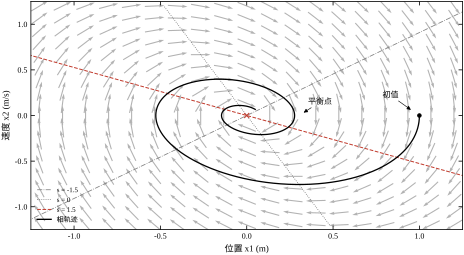
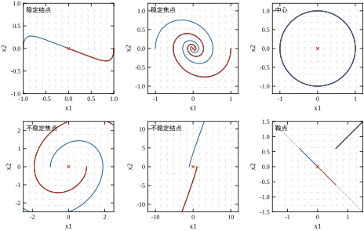
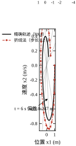
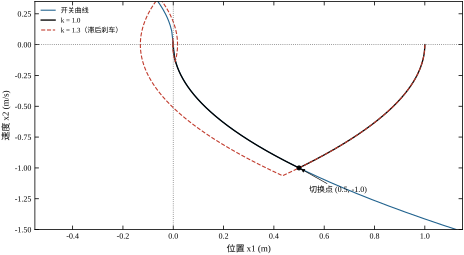
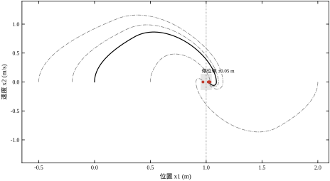
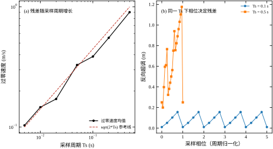
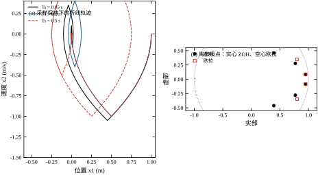
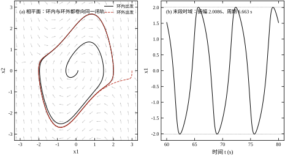
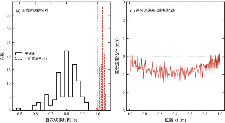
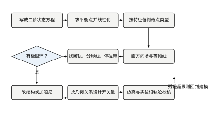

设想一台丝杠滑台，要在 1 m 的行程内把工件送到位。执行机构是直流电机加驱动器，驱动器内部有电流限幅，折算到滑台上就是加速度不超过 1\ \mathrm{m/s^2}。控制器用最普通的 PD：
u=k_p(r-y)-k_d\dot y \tag{48-1}
先取 k_p=1、k_d=2，闭环是 \omega_n=1 rad/s、\zeta=1 的临界阻尼，阶跃响应零超调，2% 调节时间 5.83 s。慢，但规矩。
客户嫌慢。于是把 k_p 提到 4，k_d 保持 2。按线性理论，\omega_n 变成 2 rad/s、\zeta 降到 0.5，超调应该在 16% 左右，调节时间缩短一半。实测却是：超调 13.88%，峰值 1.1388 m，2% 调节时间 4.33 s，而且控制量在整段过程里变号 8 次——比线性预测的 1 次多得多。
为什么多出这么多次变号？因为线性理论算出来的控制量根本不成立。初始误差 1 m 时式 (48-1) 要求 u=4，而电机只能给 1。前 0.3 s 里控制器以为自己在“轻轻刹车”，实际上一直是满油门。等它发现速度已经太大，再想减速又得反向满油门。这一来一回，就是相图上的一段折线：先沿一条抛物线加速，撞到限幅边界，再沿另一条抛物线减速，来回几次才收住。
这就是本章要讲的事：当执行机构会饱和时，线性理论给出的超调、调节时间、甚至振荡次数都可能错得离谱，而相平面能把这段“满油门—反向满油门”的过程画出来给你看。
把系统的两个状态——位置 y 和速度 \dot y——看成平面上的横纵坐标。系统运行时，这一对数值随时间变化，就在平面上画出一条曲线。这条曲线叫相轨迹，这个平面叫相平面。
横轴取位置、纵轴取速度是工程上最常见的选择，因为两个量的物理意义直观：横轴是“在哪里”，纵轴是“往哪走、多快”。轨线向右走表示正在前进，向上走表示正在加速，穿过横轴表示换向。

图 48-1 是本章对象的相图。灰箭头是方向场，表示平面上每一点“下一步往哪走”；细虚线是等倾线，是把斜率相同的点连起来的辅助线；粗实线是从某个初值出发的真实轨迹。三者叠在一起，一张图就把系统的全部行为说清楚了——注意是“全部”，不只是某一条响应曲线。
方向场。相轨迹的斜率只由当前状态决定：
\frac{\mathrm{d}x_2}{\mathrm{d}x_1}=\frac{\dot x_2}{\dot x_1}=\frac{f_2(x_1,x_2)}{f_1(x_1,x_2)} \tag{48-2}
右端不含时间，所以每个点上的斜率是固定的。把每个点的斜率画成一小段箭头，就是方向场。方向场是相平面的“地形图”，轨迹是沿着地形滚下来的球。
相轨迹。从一个初值出发，顺着方向场积分出来的曲线。同一个系统有无数条轨迹，初值不同就是不同的一条。
平衡点。f_1=f_2=0 的点，轨迹停在那里不动。平衡点附近的方向场形态决定了系统的局部行为，这是 §48.2 的重点。
除了这三个，还有两个结构在本章反复出现：等倾线（斜率相等的点连成的线，手工画图的工具）和分界线（把平面分成不同归宿区域的轨迹）。饱和系统还有一个特有的结构：饱和边界，它是一对平行直线，把平面切成“满油门”和“可控”两个区域。
二阶系统的状态是两个数，正好对应平面上一个点。三阶系统要三个数，得在三维空间里画，纸上看不清；四阶以上根本画不出来。
工程上的补救办法有三条。一是投影：只画最关心的两个状态，其余当参数，但这会丢掉信息。二是截面：固定第三个状态或固定时间相位，看轨迹与截面的交点，这就是 Poincaré 截面。三是降阶：如果最快的那一对极点比关心的时间尺度快五倍以上，直接忽略。
本章只处理二阶。这不是偷懒，是因为大量机电位置伺服——单轴滑台、云台、舵机、天线座——在忽略电流环之后就是二阶的。二阶能吃透，三阶以上才有底气做近似。
阶跃响应只能回答“从零初值出发会怎样”。相图能回答一组更硬的问题：
第一，大初值会不会撞行程。 从 0.5 m 外回来、从 2 m 外回来，轨迹会不会越过机械限位？在相图上就是看轨迹最右端能到哪。
第二，会不会振个不停。 轨迹是螺旋收敛到平衡点，还是绕着一个闭合曲线转圈？后者叫极限环，是相平面独有的概念。
第三，不同初值会不会有不同归宿。 有的系统从左边出发停在 +1，从右边出发停在 -1，中间有一条分界线。这种“多吸引子”现象在线性理论里根本不存在。
第四，饱和到底吃掉了多少性能。 轨迹贴着饱和边界走的那一段有多长，就说明执行机构被用满了多久。
这四个问题的共同点是：它们都不是“某一条响应曲线”的性质，而是“整个平面”的性质。 要回答它们，必须看一族轨迹，而不是一条。
阶跃响应和相图不是替代关系，各有各的盲区。
阶跃响应有时间轴，能直接读出调节时间、上升时间、超调量，工程师验收看的就是它。但它的信息量只有一条曲线，初值一变就得重画。
相图没有时间刻度，读不出“几秒到”，但它一张图覆盖所有初值，能看出轨迹的形状、走向、有没有闭轨。
所以正确的用法是：用相图想清楚“为什么”，用阶跃响应验收“是多少”。 本章每个结论都先用相图解释机制，再用时间响应给出数字。§48.2.14 会给出从相轨迹恢复时间的积分公式，把两者接起来。
前面几章的工具都建立在“系统是线性的”这个前提上。根轨迹画的是闭环极点在 s 平面上的移动，前提是开环传递函数；Nyquist 判据算的是频率响应绕 -1 点的圈数，前提也是线性。
一旦出现限幅、摩擦、继电这类硬非线性，“传递函数”这个词就不成立了。工程上有三条出路：
三者的关系是互补：相平面给你直觉和精确的大信号轨迹，描述函数给你极限环的定量估计，圆判据给你“无论非线性长什么样都稳”的保证。第 49、50 章会接着讲后两个。
为了不让结论停留在定性描述，本章固定一套参数，所有数字都由 code/ch048_sim.py 实跑得到。
对象是带加速度限幅的双积分器：
\dot x_1=x_2,\qquad \dot x_2=\operatorname{sat}\big(k_p(r-x_1)-k_dx_2\big),\qquad |u|\le u_{\max}=1 \tag{48-3}
其中 x_1=y 单位 m，x_2=\dot y 单位 m/s，u 单位 \mathrm{m/s^2}。参考 r=1 m，初值默认 (0,0)，积分步长 h=0.001 s。
这套归一化参数的好处是：u_{\max}=1 让“饱和”和“未饱和”在图上分得很开；\omega_n 在 1～2 rad/s 量级，时间常数是秒，画图时不用放大时间轴；位置和速度的量级都在 1 附近，相图的横纵比例接近 1:1，轨迹形状不失真。
三组增益贯穿全章：k_p=1,k_d=2（临界阻尼、不饱和）、k_p=4,k_d=2（欠阻尼、会饱和）、以及后面时间最优用的开关控制。
表 48-1 是两组增益的实测对比。左列是线性工作、右列是大信号饱和，两者用的是同一个对象、同一个参考，只差一个 k_p。
表 48-1 线性 PD 与饱和 PD 的实测对比（r=1，初值 (0,0)）
| 指标 | 线性 PD（k_p=1） | 饱和 PD（k_p=4） |
|---|---|---|
| 超调 | 0.00% | 13.88% |
| 调节时间（2% 带） | 5.83 s | 4.33 s |
| 峰值 | 1.0000 | 1.1388 |
| 饱和时间占比 | 0% | 6.6% |
| 控制量变号次数 | 1 | 8 |
两件事值得注意。
第一，饱和只占了 6.6% 的时间，却造成了 13.88% 的超调。15 s 的仿真窗口里，6.6% 折合 0.99 s，主体是开头 0.82 s 的满油门，剩下的是几次反向修正的短暂饱和。短时间的饱和，长尾的影响——这是饱和系统最反直觉的地方。
第二，控制量变号 8 次。线性二阶系统在一次阶跃里最多变号一次（从正到负，然后趋于零）。8 次说明轨迹在平衡点附近来回穿了好几次，每次穿都在相图上留下一个折角。这些折角就是 §48.4 要解释的对象。
十二节的安排是：§48.2 建立数学工具（奇点分类、等倾线、极限环、离散相平面）；§48.3 给出八步设计流程；§48.4 讲连续系统的三种典型非线性（饱和、摩擦、时间最优开关）；§48.5 讲离散与采样带来的新问题；§48.6 讲稳定性与性能的判读；§48.7 解释每个参数在相图上的位置；§48.8 给调参经验；§48.9 讲四种结构改进；§48.10 讲工程落地（实验相轨迹怎么采、噪声怎么办）；§48.11 讲优缺点与适用边界；§48.12 给可运行的仿真代码。
三条边界先说清楚，避免和别的章重复：
误判一：把相图当成仿真结果的截图。 相图里没有时间，两个点之间隔多久看不出来。有人拿相图上“轨迹很密”就断定“系统很快”，这是错的——密只说明速度小，不说明时间短。时间要用 §48.2.14 的积分算。
误判二：以为平衡点稳定就等于系统稳定。 平衡点局部稳定只保证“足够小的扰动会回来”。初始误差 1 m 时，系统可能先撞限位再回来，甚至回不来。相平面的价值恰恰在于它看的是全局，不是局部。
误判三：只画一条轨迹就下结论。 相图是一族曲线。从 (0,0) 出发收敛，不代表从 (-0.5,0) 出发也收敛。本章后面每次讲“收敛”，都会给出至少两个初值的结果。
相平面法不是新东西。20 世纪 30 年代没有数字计算机，苏联学派（Andronov 等人）用相平面分析继电器伺服，靠的就是手画等倾线：给定斜率 s，解出“斜率为 s 的点”连成一条线，再从初值出发按斜率折线前进。
这套方法的精度有多高？本章用步长 0.2 s 的折线法复现了一遍，与四阶龙格－库塔的精确解对比：t=1 s 偏差 +0.0435 m，t=3 s 偏差 -0.1976 m，t=6 s 偏差 +0.2470 m（表 48-5）。偏差先增后减再增，不是单调累积，因为折线在拐弯处会“抄近路”，误差有正有负。
结论很明确：手工等倾线适合判断形状——往哪拐、拐几次、会不会闭起来；不适合读数值。 今天的工程实践里，等倾线仍然有用，但用途变成了“在写代码之前先在纸上确认轨迹的大致形状”，数值一律交给仿真。
相平面分析听起来抽象，实际开工前只需要准备五样东西。五样缺一样，后面的结论就会打折扣。
第一，二阶模型。 两个状态方程 f_1,f_2，以及它们适用的范围。模型可以是机理推出来的，也可以是辨识出来的，但必须写清楚“哪些效应被忽略了”。
第二，执行机构的能力边界。 加速度上限、力矩上限、电压上限，折算到同一个物理量上。这个数决定了饱和边界在哪，是整个分析里最关键的输入。
第三，测量链。 位置怎么测、速度怎么来、噪声多大、有没有滤波。它决定了相轨迹能不能画准，也决定了 §48.5 的残差结论。
第四，精度要求。 定位精度、允许超调、节拍时间。没有这三条，调参就没有验收标准。
第五，工况清单。 行程范围、初值分布、负载变化、环境温度。相图分析的是“一族轨迹”，工况清单就是决定画哪几条的依据。
现场最常见的失败是只准备了第一条就开工：模型有了，直接画图，画完发现不知道执行机构能出多大力，于是所有关于饱和的结论都是猜的。五样里最该先确认的是第二样，因为它同时决定了饱和边界、脱饱和点、时间最优的下限，几乎一半的结论都挂在它上面。
把二阶系统写成状态方程：
\dot x_1=f_1(x_1,x_2),\qquad \dot x_2=f_2(x_1,x_2) \tag{48-4}
右端不显含 t，这种系统叫自治系统。自治性是相平面法能成立的前提：只有右端与时间无关，平面上每一点的“走向”才是固定的，才能画出方向场。
自治性还带来一个结论：解曲线不相交。如果两条轨迹在某点相遇，那么从这一点出发的解就不唯一了，这与 f 满足李普希茨条件时解的唯一性矛盾。唯一例外是平衡点——那里 f=0，轨迹可以“停”在那里，多条轨迹汇聚到同一点是允许的。
把两式相除，消掉时间：
\frac{\mathrm{d}x_2}{\mathrm{d}x_1}=\frac{f_2(x_1,x_2)}{f_1(x_1,x_2)} \tag{48-5}
这是一个一阶方程，比原来的二阶系统少了一个变量。两条推论直接来自它。
推论一：除 f_1=0 处，轨迹的斜率处处有限。 所以轨迹是光滑曲线，只有在 x_2=0（速度为零）的地方才有竖直切线——物理上就是换向点。
推论二：轨迹不会分叉。 同一个点只有一个斜率，所以轨迹要么穿过，要么停住，不会一分为二。这条性质让相图读起来像地图：每条路只能单向走。
平衡点满足 f_1=f_2=0。在平衡点 x_e 附近做一阶展开，得到线性化系统 \dot{\tilde x}=J\tilde x，其中
J=\begin{bmatrix}\dfrac{\partial f_1}{\partial x_1}&\dfrac{\partial f_1}{\partial x_2}\\[2mm]\dfrac{\partial f_2}{\partial x_1}&\dfrac{\partial f_2}{\partial x_2}\end{bmatrix}_{x=x_e} \tag{48-6}
特征值由特征多项式给出：
\lambda^2-(\operatorname{tr}J)\lambda+\det J=0 \tag{48-7}
Hartman－Grobman 定理说：只要 J 没有零实部的特征值（这样的平衡点叫双曲平衡点），非线性系统在平衡点邻域的相图与线性化系统拓扑等价。也就是说，看特征值就能定性地判断局部形态。
这条定理划出了一条清晰的分界：特征值实部非零，线性化说了算；实部为零（中心、高阶退化），线性化失效，必须看非线性项——第 48.2.9 小节的极限环就是这种情况。
实际判类型时不必真的解出特征值，用迹和行列式更快。由韦达定理，\operatorname{tr}J=\lambda_1+\lambda_2、\det J=\lambda_1\lambda_2，于是：
本章对象 J=\begin{bmatrix}0&1\\-4&-2\end{bmatrix}，\operatorname{tr}J=-2、\det J=4、\Delta=4-16<0，三步就能判出“稳定焦点”，比解 \lambda^2+2\lambda+4=0 快得多。现场调试时用这套判据，看一眼增益就能说出形态，不必动笔。
按式 (48-7) 的根在复平面上的位置，双曲平衡点分成六类（表 48-2）。
表 48-2 二阶系统的六种奇点
| 类型 | 特征值 | 相图形态 | 稳定性 |
|---|---|---|---|
| 稳定结点 | 两个负实根 | 轨迹沿两个方向切入 | 渐近稳定 |
| 不稳定结点 | 两个正实根 | 轨迹沿两个方向射出 | 不稳定 |
| 鞍点 | 一正一负实根 | 四条分界线构成双曲线族 | 不稳定 |
| 稳定焦点 | 共轭复根，实部为负 | 螺旋内卷 | 渐近稳定 |
| 不稳定焦点 | 共轭复根，实部为正 | 螺旋外张 | 不稳定 |
| 中心 | 纯虚根 | 同心闭轨 | 稳定但非渐近 |

图 48-2 把六种形态画在同一尺度下。最值得记的是两个对比：结点与焦点的区别在于有没有旋转（实根还是复根），焦点与中心的区别在于螺旋是往里还是原地转（实部符号）。
都叫“稳定”，收敛的快慢和形状差得很远。用 \omega_n=1、初值 (1,0) 实测（判据是 |x| 降到 0.01）：
不稳定的一侧：不稳定焦点 11.270 s 发散到 |x|=10，不稳定结点只用 1.205 s。发散的结点比发散的焦点快得多——这也是工程上宁可要“过阻尼但稳”，不要“欠阻尼接近临界”的原因之一。
鞍点是六种里最特殊的一个：它既不是稳定也不是完全不稳定的，而是“有的方向进、有的方向出”。
取 A=\begin{bmatrix}0&1\\1&0\end{bmatrix}，特征值 \pm1，特征向量 (1,1) 与 (1,-1)。沿 (1,-1) 出发的轨迹会笔直回到原点，沿 (1,1) 出发的会笔直逃走。实测：
偏 10% 与偏 50%，逃逸时间只差 1.6 倍，终点却差 5 倍。这说明鞍点附近的“稳”是假的：只要不在分界线上，迟早会走，而且走得越来越快。工程上遇到鞍点，第一反应应该是“这条分界线在哪”，而不是“它稳不稳”。
等倾线是“斜率等于给定值 s 的点”的集合：
f_2(x_1,x_2)=s\,f_1(x_1,x_2) \tag{48-8}
对线性系统 \ddot x+2\zeta\omega_n\dot x+\omega_n^2x=0，取 \omega_n=1，等倾线是过原点的直线：
x_1=-(2\zeta+s)\,x_2 \tag{48-9}
表 48-3 是 \zeta=0.2、x_2=0.5 处的四个验算点，把数值代回式 (48-9) 算出的斜率与设定值的偏差都在 10^{-6} 以下（偏差来自浮点，不是方法误差）。
表 48-3 等倾线的数值验算（\zeta=0.2，x_2=0.5）
| 设定斜率 s | 解出 x_1 | 回算斜率 | 偏差 |
|---|---|---|---|
| -2 | +0.800 | -2.000000 | <10^{-6} |
| -1 | +0.300 | -1.000000 | <10^{-6} |
| 0 | -0.200 | 0.000000 | <10^{-6} |
| +1 | -0.700 | +1.000000 | <10^{-6} |
线性系统的等倾线是一族过原点的直线，画起来极快。非线性系统的等倾线是曲线，要靠逐点解方程，这就是为什么手工相图基本只用于线性或分段线性系统。
两个对称性可以省一半工作量。
轴对称：若 f_1(-x_1,x_2)=-f_1(x_1,x_2) 且 f_2(-x_1,x_2)=f_2(x_1,x_2)，相图关于 x_2 轴对称。物理含义是“正向和反向的动力学一样”。
时间反演：把 t 换成 -t，f 变号，轨迹沿原路反向走。所以“从 A 到 B 要多久”与“从 B 反向到 A 要多久”相同。
本章的饱和 PD 满足第一种：限幅是对称的 \pm1，PD 是线性的，所以相图关于 x_2 轴对称。这意味着从 (0,0) 到 (1,0) 的轨迹，与从 (2,0) 到 (1,0) 的轨迹互为镜像。
两者都是闭轨，但性质完全不同。
中心的闭轨是一族。 每换一个初值就换一个半径，轨迹之间互不相交也互不吸引。数值上它极其脆弱——任何一点阻尼都会让它变成螺旋。
极限环是孤立的。 附近所有轨迹要么被吸到环上（稳定极限环），要么被推离（不稳定极限环）。它由非线性“造”出来，不依赖初值。
van der Pol 振子是标准例子，\ddot x-\mu(1-x^2)\dot x+x=0。实测：
\mu 越大，环越“方”，周期越长。振幅几乎不变（都在 2.01 附近），因为环的位置由 |x|=2 附近的散度变号点决定，与 \mu 关系不大。
Bendixson 散度判据：在单连通区域 D 内，若
\nabla\cdot f=\frac{\partial f_1}{\partial x_1}+\frac{\partial f_2}{\partial x_2} \tag{48-10}
不变号且不恒为零，则 D 内没有闭轨。这是一个“排除”判据，好用但只能否证。
Poincaré－Bendixson 定理：在有界区域内，若存在一个环状的捕获区（轨迹进去出不来）且区内没有平衡点，则区内至少有一条闭轨。这是一个“存在”判据。
两条合起来是标准套路：先用散度排除“到处都有闭轨”的可能，再用捕获区证明“至少有一条”，最后用仿真定位。
van der Pol 的散度是 \mu(1-x_1^2)：|x_1|<1 时为正（向外推），|x_1|>1 时为负（向内收），在 |x_1|=1 处变号。判据不排除闭轨，与事实一致。
鞍点的稳定流形叫分界线。它把平面分成几个区域，每个区域里的轨迹最终去往同一个吸引子，这个区域叫吸引域。
工程含义很直接：初始条件落在哪个吸引域，决定最终停在哪里。 带摩擦的双向定位系统里，从左边大初值出发可能停在 +1，从右边大初值出发停在 -1，中间的分界线就是“临界初值”。这条信息在线性理论里完全没有对应物。
本章的算例里分界线比较简单（就是鞍点的特征向量所在直线），因为对象只有一个平衡点。多平衡点的系统，分界线会是弯的，需要用反向积分从鞍点“倒着长”出来。
实际系统总有点非自治：参考在变、参数在漂、采样在跳。三条处理路线：
扩展状态。把参考 r(t) 当成第三个状态 \dot r=0（常值）或 \dot r=v（斜坡），系统仍是自治的，但维数加一。
冻结时间。如果参考变化比系统动态慢得多，就在每个时刻把 r 当常数，画“准静态”相图。这是增益调度的理论基础。
Poincaré 截面。周期激励的系统，每隔一个激励周期取一次状态，把连续流变成离散映射。第 48.2.13 小节和第 48.5 节用的就是这个思路。
采样系统只在 t=kT_s 时刻更新控制量，状态演化是逐拍的映射：
x_{k+1}=F(x_k),\qquad F=\Phi(T_s)x_k+\Gamma(T_s)u_k \tag{48-11}
相图从连续曲线变成点列。此时“斜率”没有意义，改看步进向量 x_{k+1}-x_k：它指向下一步会跳到哪。轨迹用折线连起来只是为了好看，真正有意义的是那些离散点。
稳定性判据也换了：不动点处 F 的雅可比矩阵特征值必须全部落在单位圆内。第 48.5 节会用这条判据对比零阶保持与欧拉离散的差别——零阶保持永远在圆内，欧拉在 T_s=0.5 s 时就跑到圆上，T_s=0.8 s 时到 1.4000。
相图不含时间，但可以从轨迹积分回来。由 \mathrm{d}x_1/\mathrm{d}t=x_2 得
t-t_0=\int_{x_1(t_0)}^{x_1(t)}\frac{\mathrm{d}\xi}{x_2(\xi)} \tag{48-12}
用的时候有两个坑。第一，x_2=0 处被积函数发散，必须在换向点处分段积分，每段只走单调的那一半。第二，x_2 是被积函数的分母，速度很小时积分值对速度误差极其敏感——这就是 §48.5 里测速噪声会严重破坏切换时刻的原因。
拿时间最优验算一遍。从 (1,0) 出发，先以 u=-1 加速到 (0.5,-1)，用时 \sqrt{2\times0.5/1}=1 s；再以 u=+1 减速回到原点，又用 1 s，合计 2 s。仿真实测首次过零在 1.9722 s，比理论早 0.0278 s，这是步长 2\times10^{-4} 造成的切换滞后，量级与 \sqrt{2a\cdot2h}=0.0283 相符。
前面讲奇点靠的是特征值，那是“局部、线性”的看法。换成能量，能看到另一层结构，而且这一层对非线性系统同样成立。
取保守系统 \ddot x+\omega_n^2x=0，定义
V(x_1,x_2)=\tfrac12x_2^2+\tfrac12\omega_n^2x_1^2
沿轨迹求导：
\dot V=x_2\dot x_2+\omega_n^2x_1\dot x_1=x_2\bigl(-\omega_n^2x_1+\omega_n^2x_1\bigr)=0
导数恒为零，说明 V 是运动不变量。V 的等值线是椭圆，所以整族闭轨其实就是一族等能线——中心的存在，本质上是能量守恒。
加上阻尼，f_2=-\omega_n^2x_1-2\zeta\omega_nx_2，同一个 V 的导数变成
\dot V=-2\zeta\omega_nx_2^2\le0
只在 x_2=0（横轴）上取零。于是轨迹只能向能量更低的方向走，等能线被一层层穿过，画出来就是螺旋——焦点就是“能量单调下降”的几何图像。
对 van der Pol，\dot V=\mu(1-x_1^2)x_2^2。|x_1|<1 时 \dot V>0，系统从外部“吸”能量；|x_1|>1 时 \dot V<0，能量被耗散。两者在 |x_1|=1 附近取得平衡，轨迹就被锁在一条能量收支相抵的闭轨上。这和 §48.2.10 的散度判据说的是同一件事：散度 \mu(1-x_1^2) 的符号，就是能量注入与耗散的符号。
这个视角还顺带解释了一件事：V 本身就是一个候选 Lyapunov 函数。第 48.6.1 小节要用它判稳定性，而不用去猜别的函数——能量是最自然的 Lyapunov 函数。
六种奇点里，中心是最不适合工程的一种，原因不在稳定性定义，而在它对参数的敏感。
本章数值实验给出中心 40 s 内半径只变 1.44\times10^{-14}，看起来完美守恒。但这是理想模型的结果：只要 \zeta 从 0 变成 10^{-3}，特征值就从 \pm j 变成 -10^{-3}\pm j，相图从闭轨变成极缓的螺旋。半径要衰减到 1/e 需要 1000 s，肉眼几乎看不出来，可它确实在衰减。
数学上把这件事叫结构稳定性：参数微小扰动后相图拓扑不变的系统才是结构稳定的。结点、焦点、鞍点都是结构稳定的；中心不是——它是“参数恰好落在分界线上”的临界情形，一扰动就掉到焦点那一侧。
工程含义很直接：看到中心，先问“阻尼从哪来”。真实的定位台有轴承摩擦、风阻、测速滤波的相位滞后，这些都会把中心推成焦点。所以本章从不把 \zeta=0 当设计目标，而是把 \zeta 设在 0.5 到 0.7 之间，留出明确的稳定余量。
同样的道理适用于极限环。van der Pol 的 \mu 从 0 变到正数，原点的特征值实部由 0 变正，原点从中心变成不稳定焦点，同时“生”出一条稳定极限环——这就是 Hopf 分岔的几何图像。分岔前后的相图拓扑不同，所以极限环附近也是结构不稳定区：参数稍动，环可能突然消失，系统直接发散。第 48.6 节判极限环，判的就是这个风险。
Hartman－Grobman 定理有个前提：双曲。一旦打破这个前提，线性化就不再能定性，必须回头看非线性项。三种情形最常见。
其一，特征值实部为零。 本章的 \zeta=0 就是这种，线性化告诉你“中心，闭轨”，但真实系统可能螺旋进、螺旋出，甚至闭轨只存在于一条特定曲线上。判断只能靠能量函数或数值积分。
其二，特征值重根。 \zeta=1 时两根都是 -\omega_n，\Delta=0，线性化判不出是结点还是焦点——这一步取决于二阶项。工程上这一档其实不难处理：临界阻尼附近无论是哪种，行为都足够温和；真正麻烦的是 \Delta 接近零而 \operatorname{tr}J 也接近零的“双重退化”。
其三，线性项本身为零。 这是最容易被忽略的一种。考虑
\dot x_1=-x_1^3
在原点线性化，雅可比是 0，特征值为零，定理完全用不上。但这个系统其实是渐近稳定的：取 V=x_1^4/4，则 \dot V=x_1^3\dot x_1=-x_1^6<0（x_1\ne0），V 正定、\dot V 负定，直接判稳。
反过来，\dot x_1=+x_1^3 用同样的 V 会得到 \dot V=+x_1^6>0，判为发散。两者的线性化完全一样（都是零），行为却相反——这说明在非双曲点上，线性化提供的信息量为零。
工程上的应对很简单：先算特征值，若实部明显不为零就信它；若实部接近零，立刻改用能量函数或数值扫描。 不要在有疑点时硬套特征值，那是最容易得出错误结论的路径。
相平面分析不是“画一张图看看”，而是一条有固定输入输出的流程。表 48-4 把它拆成八步，每一步都写明产出物，避免做到一半不知道该干什么。
表 48-4 相平面分析的八步与产出
| 步骤 | 做什么 | 产出 |
|---|---|---|
| 0 | 确认阶数、自治性、非线性位置 | 能否用相平面的判断 |
| 1 | 写成状态方程 | f_1,f_2 与参数表 |
| 2 | 求平衡点 | 平衡点坐标 |
| 3 | 线性化、判奇点类型 | 雅可比矩阵与特征值 |
| 4 | 画方向场 | 全局走向图 |
| 5 | 画等倾线/手工草图 | 轨迹形状的定性结论 |
| 6 | 找闭轨、分界线、停位带 | 特殊结构清单 |
| 7 | 把相图翻译成指标 | 超调、振荡次数、时间 |
| 8 | 设计并校核 | 开关曲线或增益表 |
下面用本章对象逐步走一遍。对象的参数在 §48.1.8 已给：双积分器、|u|\le1、PD 取 k_p=4、k_d=2。
三个条件，缺一不可。
阶数。状态维数必须是 2。如果对象是三阶（比如位置、速度、电流），要么忽略最快的那个极点，要么放弃相平面改用描述函数或仿真。
自治性。右端不能显含时间。跟踪时变轨迹、扫频试验都不满足，需要先把参考信号当成额外状态，或者只看“冻结参考”下的局部相图。
非线性位置。非线性必须能用几何方式表达：限幅是水平边界，摩擦是带状区域，继电是竖线，死区是横轴上的区间。如果非线性是“查表型”的（比如发动机的万有特性），画不出边界，相平面就失去了简洁性。
本章对象三条都满足：二阶、自治、非线性只有输入限幅（外加后文的摩擦）。
取 x_1=y、x_2=\dot y，把高阶方程化成一阶组：
\dot x_1=x_2,\qquad \dot x_2=\operatorname{sat}\big(k_p(r-x_1)-k_dx_2\big) \tag{48-13}
其中 \operatorname{sat}(\cdot) 表示限幅到 [-1,1]。这一步的关键是把所有非线性都收进 \operatorname{sat}，让 f_1,f_2 的结构尽量简单。
写完方程要顺手列一张参数表：k_p、k_d、u_{\max}、r、初值、采样周期。参数表不是形式主义——后面每一步的数值都要回查这张表，参数写错一位，整章结论都变。
令 \dot x_1=\dot x_2=0。由第一式得 x_2=0；代入第二式得 \operatorname{sat}(k_p(r-x_1))=0，即 x_1=r。所以平衡点唯一，是 (1,0)。
有摩擦时这个结论会变。摩擦项 f_c\operatorname{sgn}(x_2) 在 x_2=0 处不连续，平衡点不再是一个点，而是一段区间：只要驱动力小于静摩擦，任何位置都能“停住”。第 48.4.9 小节会算出这段区间的宽度是 2f_s/k_p=0.1 m。
这就是相平面相对线性理论的优势之一：它逼着你面对“平衡点可能不是一个点”这件事。
对式 (48-13) 在 (1,0) 处求雅可比。设误差 e=x_1-1，未饱和区内 u=k_p(r-x_1)-k_dx_2=-k_pe-k_dx_2，于是
J=\begin{bmatrix}0&1\\-k_p&-k_d\end{bmatrix}=\begin{bmatrix}0&1\\-4&-2\end{bmatrix} \tag{48-14}
特征值 \lambda=-1\pm1.732j，共轭复根、实部为负，判为稳定焦点。用二阶系统的语言：\omega_n=2 rad/s、\zeta=0.5，与 k_p=4、k_d=2 的常规换算一致。
这一步给出两个信息。第一，局部是振荡收敛，所以小信号下会有超调，欠阻尼。第二，收敛速度由实部 -1 决定，时间常数 1 s，所以小信号调节时间在 4 s 量级——与实测 4.33 s 对得上。
注意：线性化只在未饱和区成立。初始误差 1 m 时控制量是 4，远超限幅，所以真实轨迹一开始不按这对特征值走。这正是下一步要画方向场的原因。
方向场的画法是网格化：在 [-0.5,1.5]\times[-1.5,1.5] 上取 20×20 个点，每点算 (x_2,\operatorname{sat}(4(1-x_1)-2x_2))，归一化后画箭头。
画出来会看到三个区域：
饱和区与未饱和区的分界是两条直线。令 u=\pm1：
x_2=\frac{k_p(r-x_1)\mp1}{k_d} \tag{48-15}
代入数值，两条线是 x_2=1.5-2x_1 与 x_2=2.5-2x_1。它们平行，斜率 -2，把平面切成三条带。式 (48-15) 是相平面设计里最常用的一条公式：限幅在相平面上是一对平行线，位置由 u_{\max}/k_d 决定。
如果手边没有计算机，用等倾线画草图。对未饱和区，等倾线是
x_2=\frac{-k_p(x_1-r)}{s+k_d} \tag{48-16}
给定一系列 s（比如 -6,-4,-2,-1,0,1），画出过 (r,0) 的一族直线，再从初值开始按斜率折线前进。

图 48-3 里，折线在轨迹弯曲最厉害的地方偏得最多。注意它并没有“一直往外飘”，而是在精确轨迹两侧来回摆——这就是下面表 48-5 里偏差有正有负的原因。
折线法的精度不高。本章实测：步长 0.2 s 时，t=3 s 的位置偏差已经到 -0.1976 m，t=6 s 到 +0.2470 m（表 48-5）。
表 48-5 折线法与精确解的偏差（\zeta=0.2，步长 0.2 s）
| 时刻 (s) | 折线 x_1 | 精确 x_1 | 偏差 (m) |
|---|---|---|---|
| 1.0 | +0.6385 | +0.5950 | +0.0435 |
| 2.0 | −0.1990 | −0.1275 | −0.0715 |
| 3.0 | −0.7127 | −0.5151 | −0.1976 |
| 4.0 | −0.5258 | −0.3845 | −0.1413 |
| 5.0 | +0.0735 | −0.0055 | +0.0790 |
| 6.0 | +0.4997 | +0.2527 | +0.2470 |
偏差先增后减再增，不是单调累积——折线在拐弯处“抄近路”，误差有正有负。这说明手工草图适合判断形状，不适合读数值。
三类结构要专门找。
闭轨。把轨迹积分足够长时间，看它是否进入一条固定曲线。van der Pol 从 (0.1,0) 和 (3,0) 出发，末段都收敛到振幅 2.0086、周期 6.6633 s 的同一条环（§48.6.3）。
分界线。从鞍点出发，沿稳定特征向量反向积分。本章鞍点的稳定方向是 (1,-1)，分界线就是这条直线本身。
停位带。有摩擦时，轨迹最后会落在 x_2=0 上的一段区间。本章实测五个初值的终点散布 0.0632 m，落在理论带 \pm0.05 m 内（§48.4.9）。
从相图读四个指标，方法各不相同。
超调：轨迹最右端的 x_1 减去目标值，除以目标值。本章是 (1.1388-1)/1=13.88\%。
振荡次数：数轨迹穿过 x_2=0 轴的次数，除以 2。饱和 PD 的 8 次控制量变号大致对应 4 个来回。
调节时间：用式 (48-12) 积分，或者直接用时间响应。相图本身不含时间刻度，这一步必须借助积分或仿真。
控制量：看轨迹离饱和边界多远。贴着边界走，说明执行机构用满；离边界很远，说明能力有富余。
设计动作分两类。
改增益。k_p 决定未饱和区的 \omega_n，k_d 决定 \zeta。但改增益会同时移动饱和边界（式 48-14 里有 k_p、k_d），所以不能只看线性化。
改结构。如果增益怎么调都不满意，就改结构：加前馈、加开关曲线、加增益调度。第 48.9 节会给四种结构改进。
校核的最小集合是三条：阶跃响应（看超调与调节时间）、大初值相图（看会不会撞行程）、限幅边界（看控制量是否长时间贴边）。三条都过，才算设计完成。
把八步走完，得到的结论可以压成一段话：
对象是二阶自治的，平衡点 (1,0)，线性化是 \zeta=0.5 的稳定焦点，\omega_n=2 rad/s；未饱和区是两条斜率 -2 的平行线夹出的斜带，带宽 2u_{\max}/k_d=1 m/s；轨迹从 (0,0) 出发先贴 u=1 的边界走抛物线，在 (0.3385,0.8228) 处退出饱和，然后按焦点方式绕行，冲过目标 13.88%，经过约 4 个来回后在 4.33 s 进入 2% 带。
这段描述里的每个数字都能在相图上指出来，这就是相平面法的价值：它把“超调 13.88%”这种孤立指标，变成“从哪个点退出饱和、以多大速度冲过去”的几何故事。
八步流程在纸上好看，落到项目里容易走样。稳妥的做法是把它固定成一张工作表，每次分析填一遍，字段固定、顺序固定。
工作表只有六栏：
第一栏，对象与假设。 写清状态变量、控制量、单位、忽略了什么（电感、齿隙、传动柔性）。这一栏最容易被跳过，但它决定了后面所有结论的适用范围。忽略的东西写出来，别人才知道结论能推到哪。
第二栏，参数表。 k_p、k_d、u_{\max}、r、f_s、f_c、T_s、\sigma_p，一个不少。工程上最常见的错误不是算错，是参数用了上一版的。
第三栏，平衡点与特征值。 平衡点坐标、\operatorname{tr}J、\det J、奇点类型。没摩擦时是一个点，有摩擦时要写明“一条带，半宽 f_s/k_p”。
第四栏，边界方程。 式 (48-15) 的两条饱和线，加上停位带的两条竖线。这一栏是相图的骨架，后面画图只是往骨架上填轨迹。
第五栏，关键点与预测指标。 脱饱和点、开关点、预计超调、预计调节时间。每个数都要写出算式，方便复核。
第六栏，校核结论。 仿真或实测的相轨迹与预测差多少，差在哪一段。差异超过 20% 就回到第一栏检查假设，而不是继续调增益。
这张表的价值在于强迫你把“猜”和“算”分开。第五栏里凡是没有算式的数，都是猜的，验收时不能拿它当依据。团队协作时，这张表还能当交接文档：换人接手，看一眼就知道上一版做到哪、哪些假设还没验证。
返工点一：坐标选错。 把位置和速度的单位混着用（一个用 mm、一个用 m/s），相图的斜率会差三个数量级，等倾线全部变形。做法是先把所有量归一化，再画图。
返工点二：忘了限幅边界随增益移动。 调完 k_p 直接看新的超调，却没意识到饱和带也变了，于是“调一点、超一点”，找不到原因。正确做法是每改一次增益，重画式 (48-15) 的两条边界。
返工点三：把仿真步长当成采样周期。 仿真里 h=0.001 s 是积分步长，不是控制器采样周期。相图看起来光滑，不代表实际系统光滑。第 48.5 节会专门处理这件事。
相平面最好用的时候，是非线性只表现为“几何形状”的时候。三种最常见：
限幅：u=\operatorname{sat}(\cdot)，相图上是一对平行直线。线外加速度恒定，线内按线性规律走。
干摩擦：f_c\operatorname{sgn}(x_2)，相图上是一条沿横轴展开的带。带内静摩擦能顶住驱动力，系统“卡”在那里不动。
继电/开关：u=\pm u_{\max} 二选一，相图上是“半平面各一个常值加速度”，轨迹全由抛物线拼成。
三者的共同点：边界的位置和形状能用简单公式写出来，所以轨迹可以分段解析。这是相平面法相对数值仿真的真正优势——它给的不是一条曲线，而是分段结构。
进入饱和后 u=\pm u_{\max} 是常数，对象退化成纯积分器：
x_1(\tau)=x_1(0)+x_2(0)\tau+\tfrac{1}{2}u\tau^2,\qquad x_2(\tau)=x_2(0)+u\tau \tag{48-17}
消去 \tau，得到一条抛物线：
x_1=x_1(0)+\frac{x_2^2-x_2^2(0)}{2u} \tag{48-18}
所有饱和段的轨迹都是同一条抛物线的平移，顶点都落在 x_2=0 上。这就是为什么在相图上，饱和区的箭头全是平行的——方向相同，只是起点不同。
抛物线有个好用的性质：从 x_2 刹到零所需的位置增量是 x_2^2/(2|u|)。这条“制动距离”公式在后面判断会不会撞限位、会不会超调时反复用到。
本章对象 k_p=4、k_d=2、u_{\max}=1，从 (0,0) 出发。饱和段的解是 x_1=t^2/2、x_2=t，边界是 x_2=1.5-2x_1。代入得
t=1.5-t^2\;\Longrightarrow\;t^2+t-1.5=0\;\Longrightarrow\;t=0.8229\ \mathrm{s}
此时 x_1=0.3386 m、x_2=0.8229 m/s。仿真实测 (0.3385,\,0.8228)，差 10^{-4}，来自积分步长。
这个解析结果说明一件事：脱饱和点只由初值和饱和边界决定，与未饱和区里的具体增益形式无关（只要边界还是那两条线）。设计时想改脱饱和点，改的是 k_p、k_d、u_{\max}，不是别的。
有了脱饱和点，超调就能算账了。
离开饱和时速度 0.8229 m/s，全力刹车的距离是 0.8229^2/2=0.3386 m。此时离目标还有 0.6615 m，所以刹得住，不会撞限位。既然刹得住，为什么还超调 13.88%？
因为 PD 不是 bang-bang。它不会立刻全力刹车，而是按误差比例分配制动力。刚脱饱和时 u 只比 1 略小，位置越靠近目标，u 越小；等误差降到很小、速度还很大时，u\approx-k_dx_2，只剩阻尼项，减速度随速度一起指数衰减。结果是轨迹以很小的减速度“蹭”过目标，冲到 1.1388 才停住，然后被拉回来。
一句话总结：超调不是“刹不住”，是“没舍得刹”。 这也解释了为什么单纯加大 k_d 有效但代价大——它提高的是减速力度，同时也放大噪声（§48.5 会算这笔账）。
既然 PD “没舍得刹”，那就干脆规定必须全力刹。问题变成：在 |u|\le1 的约束下，怎样从 (1,0) 最快到达原点？
用庞特里亚金极大值原理。哈密顿量 H=\lambda_1x_2+\lambda_2u 对 u 是线性的，所以最优控制只能取边界值，即 u=\pm u_{\max}——这叫 bang-bang 控制。切换时刻由协态 \lambda_2 过零决定，而 \lambda_2 对双积分器至多变号一次，所以最优解最多切换一次。
物理图像很直白：先朝目标全力加速，到某个点后全力减速，正好停在目标上。加速段和减速段的轨迹都是抛物线，两条抛物线的交点就是开关点。
把“该不该切”写成符号函数：
\sigma(x)=x_2+\operatorname{sgn}(x_1)\sqrt{2k u_{\max}|x_1|} \tag{48-19}
\sigma>0 时取 u=-u_{\max}，\sigma<0 时取 u=+u_{\max}。\sigma=0 就是开关曲线：
x_2=-\operatorname{sgn}(x_1)\sqrt{2k u_{\max}|x_1|} \tag{48-20}
k=1 时这条曲线是精确的：从曲线上任意一点全力刹车，正好停在原点（因为制动距离 x_2^2/2=|x_1|）。k 是工程上的“信心系数”，k<1 提前刹车，k>1 滞后刹车，用来给建模误差留余量。

图 48-4 画出了这两段。左半边是 u=-1 的抛物线，右半边是 u=+1 的抛物线，两条曲线在 (0.5,-1) 处相切地接上。注意开关曲线本身也是抛物线，与轨迹的减速段是同一条曲线——这不是巧合，是因为两者都满足“从该点刹车刚好停在原点”。
用步长 2\times10^{-4} s 的四阶龙格－库塔跑一遍：
过零速度才是真正有工程意义的残差：位置总要穿过零点，速度不该。-0.0282 m/s 的来源是切换滞后——离散实现里开关只能在步点判定，等检测到 \sigma 变号时已经多走了半步，刹车晚了，于是带着一点速度冲过去。量级估算 \sqrt{2a\cdot2h}=\sqrt{8\times10^{-4}}=0.0283，与实测的 0.0282 只差千分之一。
这条残差不是公式错了，是连续理论落到离散实现上必然要付的税。想少付，就把步长（或采样周期）减小，或者把开关判定做成插值。
k 取错会怎样？表 48-6 扫了五档。
表 48-6 开关曲线缩放系数 k 对过零的影响
| k | 过零时刻 (s) | 过零速度 (m/s) | 反向超调 (m) |
|---|---|---|---|
| 0.70 | 2.2020 | -0.0004 | 0.0000 |
| 0.85 | 2.0844 | -0.0008 | 0.0000 |
| 1.00 | 1.9722 | -0.0282 | 0.0004 |
| 1.15 | 1.6948 | -0.3740 | 0.0700 |
| 1.30 | 1.6154 | -0.5114 | 0.1308 |
两边都不好，但坏的形状不同。
k<1（提前刹车）：过零时刻变长到 2.20 s，但过零速度几乎为零（-0.0004），没有超调。因为刹车过早，系统停在目标之前，然后重新起步慢慢靠过去。代价是时间，不是精度。
k>1（滞后刹车）：过零时刻看着更短（1.61 s），但这是假象——它根本没停在目标上，而是带着 -0.51 m/s 的速度冲过去，超调 0.1308 m。代价是精度，而且“看起来更快”是骗人的。
工程上取 k=0.9\sim0.95 是常见折中：宁可慢一点，也不要冲过去。这和 §48.8 的调参经验一致。
加入库仑摩擦与静摩擦：
m\ddot y=u-\begin{cases}f_c\operatorname{sgn}(\dot y)+f_s\,\dot y/\epsilon, & |\dot y|<\epsilon\\[1mm] f_c\operatorname{sgn}(\dot y), & |\dot y|\ge\epsilon\end{cases} \tag{48-21}
其中 \epsilon 是速度平滑系数，仿真取 0.01 m/s，用来把静摩擦那一段不连续的符号函数抹成一条陡峭的直线——数值上必须这么做，否则速度过零时方程会抖。
停在原地时 \dot y=0，摩擦力可以取 [-f_s,\,f_s] 内任意值（由驱动力决定）。只要控制力没超过 f_s，系统就不动。于是平衡条件从“x_1=r 一个点”变成一段区间：
|k_p(r-x_1)|\le f_s\;\Longrightarrow\;|r-x_1|\le\frac{f_s}{k_p}=\frac{0.2}{4}=0.05\ \mathrm{m} \tag{48-22}
这就是停位带，宽度 2f_s/k_p=0.1 m。相图上它表现为横轴上的一段粗线：轨迹进入这段就停住，不再收敛到一点。
这个结论有个重要推论：加大 k_p 能收窄停位带。k_p 从 4 提到 40，带子从 \pm0.05 缩到 \pm0.005。但 k_p 太大会加剧噪声放大与饱和，所以实际取值要在“定位精度”和“噪声/饱和”之间折中。
表 48-7 是五个初值的实测终点。控制器 k_p=4、k_d=2，f_s=0.2、f_c=0.15。
表 48-7 干摩擦下的终点分布（理论停位带 \pm0.05 m）
| 初值 x_1(0) | 终点 x_1 | 稳态误差 (m) | 停住时刻 (s) |
|---|---|---|---|
| -0.5 | 1.0194 | +0.0194 | 4.37 |
| -0.2 | 1.0258 | +0.0258 | 4.15 |
| 0.0 | 1.0286 | +0.0286 | 3.99 |
| +0.5 | 1.0346 | +0.0346 | 1.93 |
| +2.0 | 0.9714 | -0.0286 | 3.99 |
五个终点全部落在 \pm0.05 m 以内，符合式 (48-22)。终点散布 0.0632 m，接近带宽 0.1 m 的三分之二。把摩擦去掉后终点精确回到 1.000000——这一条对照证明散布确实来自摩擦，不是数值误差。

注意表里唯一的负误差来自 x_1(0)=+2.0：它从右边过来，反向的静摩擦顶住它，于是停在目标左侧。同一个控制器，从左边来停在偏右，从右边来停在偏左——这种方向相关是摩擦系统的典型特征。
看停住时刻：从 +0.5 出发只要 1.93 s，从 -0.5 出发要 4.37 s。走的路越长，反而越快？因为从 +0.5 出发时误差小，一开始就没饱和，全程线性；从 -0.5 出发时要先加速、再减速、再进带。
真正值得注意的不是总时间，而是最后那一段。接近目标时速度很小，摩擦力与驱动力同量级，净加速度接近零，轨迹在相图上几乎是水平地“爬”向停位带。这一段的时间占比很高，而且对摩擦参数极其敏感——f_s 变 10%，停住时刻可能变 20%。
工程上的对策有三条：加积分（消掉稳态误差，但要注意抗饱和，见第 44 章）、加抖振（dither，用高频小幅振动“润滑”静摩擦）、或者干脆接受停位带，把机械精度做够。
三种非线性对应三种设计诉求：
饱和要解决的是“大信号下性能退化”。手段是抗饱和（积分限幅）或时间最优开关曲线。前者保平稳，后者保速度。
干摩擦要解决的是“停在哪儿”。手段是积分、抖振或提高 k_p。它不影响大信号，只影响最后几毫米。
继电/开关要解决的是“用最少的能量/时间到达”。手段是开关曲线设计，代价是对噪声和参数失配极其敏感（§48.10 会看到：测速噪声 0.002 m 就能把切换时刻从 1.000 s 推到 0.792 s）。
三者不是互斥的。真实的伺服系统往往同时有限幅、摩擦和采样，相平面分析的做法是分层：先用饱和边界定大信号轨迹，再用停位带定精度，最后用采样分析定实现的极限。
前面只算了从 (1,0) 出发的情形。换初值，最小时间和开关点有闭式解，值得单独记。
对双积分器，从 (x_1,0) 出发，先把位移分成两半：前半加速、后半减速，开关点必在 x_1/2 处。加速段走完 x_1/2 所需时间由 x_1/2=\tfrac12u_{\max}t^2 得 t=\sqrt{x_1/u_{\max}}，两段对称，所以
T_{\min}=2\sqrt{\frac{x_1}{u_{\max}}}
代入本章的 u_{\max}=1：初值 1 m 时 2.0000 s，0.5 m 时 1.4142 s，2 m 时 2.8284 s。位移翻四倍，时间才翻倍——这是 \sqrt{\cdot} 标度律，行程规划里常用它快速估时。
初值带速度时要多一项。从 (1,1) 出发，控制先取 u=-1 减速，速度从 1 降到 -1.2247，用时 2.2247 s，此时位置 0.75 m；再全力刹车 1.2247 s，合计 3.4495 s，开关点是 (0.75,-1.2247)。可见初速越大，开关点越靠右、越靠下，因为要多留制动距离。
这也解释了一个现场现象：同样的控制器，从静止起步很干脆，从运动中的位置接续（比如换向、重新使能）就容易超调。不是控制器变了，是初值把开关点推到了饱和区外面，轨迹来不及按开关曲线走。
顺带说清式 (48-24) 的适用条件：只对“单轴、无摩擦、控制量只有幅值约束”的双积分器成立。加了摩擦，前半段要克服静摩擦，实际时间略长；加了速度限幅，就变成三约束问题，闭式解没有了，只能用数值优化（第 58 章）。
除了限幅、摩擦、继电，工程上还有两种非线性经常出现，相图上的表现同样是“一条带”，但成因不同。
死区。控制器在 |e|<d 时不输出，即 u=0。相图上，x_1\in[r-d,r+d] 是一条竖直的带，带内没有控制力，轨迹只能靠惯性直线滑过。后果是稳态精度被吃掉：轨迹滑进带内就再也出不来，最终停在哪取决于进入时的速度。本章的停位带是“摩擦顶住”，死区是“控制器不管”，两者在相图上都是横轴上的一段，但一个由 f_s/k_p 定宽，一个由 d 定宽。
滞环。继电特性带滞环时，吸合与释放的门限不同，开关线不是一条而是一对，中间夹出一条回环。轨迹在回环内来回穿，两次切换的幅值不一样，于是产生一个幅值约为滞环宽度量级的小极限环——表现就是稳态抖动。相图上它很好认：轨迹在目标附近绕出一个小圈，圈的宽度基本不随初值变。
这两种非线性都说明同一件事：相图上的“带”和“圈”，就是控制精度与稳态品质的直接来源。 想让带变窄，靠调增益只能治死区那一半（k_p 加大，等效死区被压缩），治不了滞环——滞环是机械/磁路特性，只能改硬件或加抖振。第 49 章会用描述函数给滞环极限环算出幅值与频率，那是本章给不出的定量结果。
真实系统往往既饱和又有摩擦。这时相图上同时存在两类结构，必须分开读。
两条饱和线。 斜率 -k_p/k_d，垂直间距 2u_{\max}/k_d，它们管的是“大信号阶段”——轨迹能走多快、在哪脱饱和。
一条停位带。 横轴上半宽 f_s/k_p 的一段，它管的是“最后几毫米”——轨迹最终停在哪。
两条根本不在同一个坐标轴上：饱和线是速度方向的约束，间距 1 m/s；停位带是位置方向的约束，宽度 0.1 m。这意味着两件事必须分开治：想让轨迹更早脱饱和，动 k_p、k_d、u_{\max}；想让终点更准，动 k_p（但会牵动饱和线）或加积分。
完整的一条轨迹会依次经过五个区域：远处加速（贴 u=+1）→ 脱饱和（穿过上边界）→ 螺旋接近（焦点形态）→ 进入停位带（穿过横轴）→ 停住。每一段对应一个可测量的时刻，§48.10.12 的调试记录就是按这五段逐个排查的。
还有一个容易被忽略的相互作用：摩擦会改变脱饱和点的位置。 饱和段里净加速度是 u_{\max}-f_c，比无摩擦时小，同样的时间里走过的位移更少，于是脱饱和来得更晚、发生的横坐标更靠近起点。调试时如果发现“实测脱饱和点比理论算得晚、位置更靠前”，先别怀疑公式，先查摩擦补偿——这比改增益更能解释偏差。
前面所有的相图都假定控制量连续更新。实际控制器每隔 T_s 读一次状态、算一次 u，然后保持到下一拍。于是相轨迹不再是光滑曲线，而是一段一段的抛物线首尾相接，拐点全部落在采样时刻上。
这件事的后果比“精度差一点”严重得多。连续理论里 \sigma=0 那一刻就该切换，离散实现里只有采样点能切换，开关时刻被量化到了 T_s 的格点上。如果开关点正好落在两个采样点中间，控制量最多晚一整拍才翻转，轨迹就多冲出去一段。
双积分器在零阶保持下可以精确离散，不需要近似：
x_{k+1}=\Phi x_k+\Gamma u_k,\qquad \Phi=\begin{bmatrix}1&T_s\\0&1\end{bmatrix},\qquad \Gamma=\begin{bmatrix}T_s^2/2\\T_s\end{bmatrix} \tag{48-23}
这个式子把“一拍之内 u 不变”这件事实完整地编码进去了，所以 x_k 就是真实的采样值，没有截断误差。工程上做离散仿真，宁可多用这种精确形式，也不要用一阶近似硬凑。
闭环极点是 \lambda=-1\pm1.732j（\zeta=0.5、\omega_n=2）。零阶保持离散后，极点映射成 z=e^{\lambda T_s}，模长是 e^{-T_s}。表 48-8 是六个采样周期的实测值。
表 48-8 离散极点模长与反向超调（k_p=4，k_d=2）
| T_s (s) | ZOH \max\lvert z\rvert | 欧拉 \max\lvert z\rvert | 反向超调 (m) |
|---|---|---|---|
| 0.01 | 0.9900 | 0.9902 | 0.0201 |
| 0.05 | 0.9512 | 0.9539 | 0.1025 |
| 0.10 | 0.9048 | 0.9165 | 0.1025 |
| 0.20 | 0.8187 | 0.8718 | 0.2100 |
| 0.50 | 0.6065 | 1.0000 | 0.5625 |
| 0.80 | 0.4493 | 1.4000 | 1.5600 |
先看 ZOH 那一列：0.9900、0.9512、0.9048、0.8187、0.6065、0.4493，正好是 e^{-T_s}。采样周期越大，极点越靠近原点——这看起来像“更稳”，其实是“每拍衰减更多”，性能反而更差。离散相平面的稳定性与性能要分开读，这是第一个坑。
欧拉那一列就出问题了：T_s=0.5 时 \max|z|=1.0000，正好压在单位圆上；T_s=0.8 时 1.4000，跑到圆外。
原因很直接。前向欧拉用 z=1+\lambda T_s 代替 e^{\lambda T_s}，把左半平面的稳定区域映射成一个圆，圆心在 -1、半径 1。\lambda=-1\pm1.732j 落在这个圆外时，离散系统就失稳了。代入 |1+\lambda T_s|<1 化简，得到稳定上限：
T_s<\frac{2\zeta}{\omega_n}=\frac{2\times0.5}{2}=0.5\ \mathrm{s} \tag{48-24}
这个式子的工程含义是：前向欧拉不是“精度稍差”，它有硬性的稳定边界。 零阶保持没有这个问题，因为 e^{\lambda T_s} 恒在单位圆内（只要连续系统稳定）。所以嵌入式实现里，要么用精确离散，要么用梯形/后向欧拉，别用前向欧拉硬扛大采样周期。
反向超调那一列最能说明“性能退化”：T_s 从 0.01 增到 0.8，超调从 0.0201 m 涨到 1.5600 m，涨了 77 倍。0.02 m 是可以忽略的，0.21 m 已经不能接受，1.56 m 意味着彻底失控。
注意它的增长不是线性的：0.05 与 0.10 都是 0.1025，0.2 跳到 0.2100，0.5 到 0.5625。这种“台阶式”增长是采样相位造成的——开关点与采样格点的相对位置在不同 T_s 下碰巧重复了。所以不能靠单点试算定采样周期，必须扫相位。
把时间最优的开关逻辑放到采样框架里：控制量每 T_s 更新一次，判定用当拍的 \sigma(x_k)。为了不靠运气，每个 T_s 扫 8 个采样相位（即首个采样点相对 t=0 的偏移），报告均值与最大值。表 48-9 是结果。
表 48-9 采样周期与采样相位对开关残差的影响（各档 8 个相位）
| T_s (s) | 过零时刻均值 (s) | 过零速度均值 (m/s) | 过零速度最大 (m/s) | 反向超调最大 (m) |
|---|---|---|---|---|
| 0.005 | 1.902 | -0.1033 | 0.1415 | 0.0100 |
| 0.010 | 1.865 | -0.1463 | 0.2000 | 0.0201 |
| 0.020 | 1.847 | -0.1714 | 0.2690 | 0.0363 |
| 0.050 | 1.729 | -0.3284 | 0.4525 | 0.1025 |
| 0.100 | 1.704 | -0.3863 | 0.6100 | 0.1881 |
| 0.200 | 1.628 | -0.5525 | 0.8800 | 0.3924 |
| 0.500 | 1.541 | -0.9031 | 1.4250 | 1.1025 |
三个现象。
第一，过零时刻普遍早于 2 s。 因为采样让开关“晚了一拍”，但晚的那一拍发生在减速段的最后，效果不是“多走一段”，而是“少减速一段时间”，于是提前冲过零点。
第二，均值与最大值差一个量级。 T_s=0.5 s 时均值 -0.90、最大 1.43。同一个周期，运气不同，残差能差 1.6 倍。这就是必须扫相位的原因。
第三，残差随 T_s 单调增长，但相位影响始终存在。 曲线整体上扬，上下包络的宽度也随 T_s 变大。

图 48-6 的右图是关键。横轴是归一化相位（0 到 1 表示开关点落在一拍之内哪个位置），纵轴是反向超调。曲线在 0.5 附近有个谷，在两端翘起来。谷底对应“开关点恰好靠近采样格点”，两端对应“开关点落在两拍正中，晚了一整拍”。
这给出一条实用的设计准则：要么把 T_s 压到开关滞后可以忽略，要么把开关判定做成事件触发或插值。前者的门槛大致是 T_s\omega_n\le0.05\sim0.1；本章 \omega_n=2，对应 T_s\le0.025\sim0.05 s，与表里 T_s=0.02 时超调 0.0363 m 的量级吻合。

图 48-7 的左图画的是 T_s=0.2 s 的折线轨迹。和连续相图比，它有两个明显不同：段与段之间是直线（一拍之内加速度恒定，轨迹其实是抛物线，但采样点稀疏，看上去像直线）；拐点全在采样格点上（不在格点上的弯折是不存在的）。
右图是极点分布。实心点（ZOH）随 T_s 增大沿实轴向左跑，始终在圆内；空心点（欧拉）在 T_s=0.5 时贴到圆上，之后跑出去。看离散相图要同时看这两张：左图告诉你性能，右图告诉你稳定。
位置编码器有噪声，速度只能靠差分估计：
\hat x_2(k)=\frac{x_1(k)-x_1(k-1)}{T_s} \tag{48-25}
两拍噪声独立、标准差都是 \sigma_p，差分后标准差放大 \sqrt2 倍，再除以 T_s：
\sigma_v=\frac{\sqrt2\,\sigma_p}{T_s} \tag{48-26}
本章取 \sigma_p=0.002 m、T_s=0.01 s，理论值 \sigma_v=0.283 m/s。静止测量 20000 拍的差分噪声，实测 0.2825 m/s，与理论一致。
0.283 m/s 是什么概念？目标速度是 1 m/s 量级，噪声占了 28%。把这么脏的速度送进开关函数，开关时刻必然乱跳。
加一个时间常数 0.05 s 的一阶低通，重新跑同一组噪声：
滤波把切换时刻的散布从 \pm0.0819 s 压到 \pm0.0121 s，压小了 6.8 倍，超调从 0.3043 m 降到 0.1025 m。但均值从 0.792 s 变成了 1.028 s——滤波引入相位滞后，开关整体推迟。
这就是离散系统的核心矛盾：噪声要滤，滤了要滞后，滞后要吃精度。 无滤波时是“乱切”，有滤波时是“晚切”。前者不可预测，后者可以补偿（把开关曲线整体前移一点），所以工程上几乎总是选滤波 + 前移。
从上面几组数据可以压出三条准则。
准则一：T_s\omega_n\le0.1。 保证开关量化误差不超过一拍的十分之一。本章 \omega_n=2，对应 T_s\le0.05 s。
准则二：离散化用精确形式或后向方法。 前向欧拉的稳定上限是 2\zeta/\omega_n，本章 0.5 s，看起来很宽松，但 \zeta 小的系统（比如 \zeta=0.05）就只有 0.05 s，很容易踩线。
准则三：测速必须滤波，且滤波后要补偿相位。 滤波时间常数取 3\sim5 倍 T_s 是常见起点，本章取 0.05 s（5 倍）；补偿量按“滤波时间常数”折算成位置或速度的偏移。
最后要交代清楚，§48.4 的哪些结论在采样系统里还能用。
能用的：饱和边界的形状（还是那两条平行线）、制动距离公式、停位带宽度、奇点分类（局部形态不变，只是极点从 s 平面映射到 z 平面）。
要打折的：时间最优的切换时刻（被量化到 T_s 格点）、过零速度（多了 T_s 量级的残差）、极限环的周期（采样会改变相位，周期可能跳变）。
完全失效的：连续意义下的渐近收敛。离散系统只能保证“采样时刻上收敛”，两拍之间的行为由零阶保持决定，可能出现连续理论预测不到的拍间振荡。
这条界线很重要：相平面分析给的是连续时间的几何直觉，落到代码上必须再过一遍离散这一关。 跳过这一关，纸面上完美的开关曲线在实机上会变成一堆乱切的折线。
拿 T_s=0.05 s、k_p=4、k_d=2、初值 (0,0) 手算三拍，能看清离散误差的起点。
式 (48-23) 逐拍代入。第 0 拍 u_0=\operatorname{sat}(4)=1，于是
x_1(1)=0+0+\tfrac12(0.05)^2\cdot1=0.00125,\qquad x_2(1)=0+0.05\cdot1=0.05
第 1 拍控制量仍是饱和的 1（4(1-0.00125)-2\times0.05=3.895>1），继续：
x_1(2)=0.00125+0.05\times0.05+0.00125=0.005,\qquad x_2(2)=0.1
第 2 拍同理，得 (0.01125,\,0.15)。
对照连续解 x_1=t^2/2、x_2=t：t=0.05 时 (0.00125,0.05)，t=0.10 时 (0.005,0.1)，t=0.15 时 (0.01125,0.15)——三拍全部逐位相同。
原因很简单：饱和段里 u 是常数，式 (48-23) 就是常加速度运动的精确解，不存在截断误差。所以离散误差不是“从第一拍就开始积累”，而是从控制量开始变化的那一拍才开始。
本章的脱饱和点在 t=0.8229 s，落在第 16 拍（0.80 s）和第 17 拍（0.85 s）之间。第 16 拍算得 u=1.12，仍按 1 输出；第 17 拍算得 u=0.855，才第一次落到非饱和区。这一拍之差的代价是位置多走约 0.023 m（0.36125 对 0.3386）。
这条手算给出一条重要的诊断思路：如果仿真与实测的差别只出现在轨迹拐弯处，那是采样问题；如果从第一拍就不对，那是模型或参数问题。 前者减小 T_s 就改善，后者改 T_s 没用。
把噪声、采样、开关三者放在一起，会出现一个连续系统里没有的现象：抖振（chatter）。
轨迹本该在 x_2=0 处平滑穿过，但开关判定用的是带噪声的速度估计。估计值在零点附近随机变号，控制量就跟着来回翻，轨迹在横轴附近画出一串小锯齿。表 48-9 里过零速度最大值那一列就是它的量化表现：T_s=0.05 s 时最大 0.4525 m/s，是均值 0.3284 的 1.4 倍；T_s=0.5 s 时最大 1.4250，均值才 0.9031。
抖振的危害不只是精度。执行机构被高频切换，电流和力矩反复冲击，发热与磨损都上去了；机械结构还会被激出高频振动。相图上它很好认：轨迹在目标附近密集成一团，而不是收敛成一点。
三种抑制手段，代价各不相同：
加滞环。开关函数从 \sigma 变成“\sigma>h 才切、\sigma<-h 才反向”，人为造一个死区。抖振幅度被限制在 h 对应的范围内，代价是稳态误差变大。
加滤波。§48.5.10 已经算过，滤波把切换时刻散布压小 6.8 倍，代价是滞后 0.236 s（1.028 s 对 0.792 s）。
降带宽。把开关曲线整体缩放到 k<1（表 48-6），提前刹车，让轨迹根本不进抖振区。代价是时间，从 1.97 s 拖到 2.20 s。
三者都只能“压制”不能“消除”。要真正消除，得换成连续控制器（PD 或 PID），但那就回到本章开头 13.88% 超调的老问题上去了。这就是开关控制的本质矛盾：要么快而抖，要么稳而慢。 第 49 章的描述函数法能把抖振的幅值与频率算出来，帮你在两者之间定量取舍。
连续相图里轨迹不自交，这是解的唯一性保证的。换成采样系统，很多人会担心：“折线画出来交叉了，是不是说明模型有问题？”
答案分三层。
第一层，采样点列不会重复。 零阶保持的映射 x_{k+1}=\Phi x_k+\Gamma u_k 里，\Phi=\begin{bmatrix}1&T_s\\0&1\end{bmatrix} 的行列式是 1，永远可逆。可逆映射是一一对应的，所以两个不同的采样点不可能映射到同一个点。点列本身不会自交。
第二层，折线可能“看起来”交叉。 图 48-7 那样的折线只是为了好看，真实轨迹在每个采样间隔里是抛物线，不是直线。两条抛物线在极稀疏采样下画成直线段，视觉上可能相交；真实的抛物线一般不相交（同一映射下唯一性仍然成立）。所以看到的交叉多半是画法造成的，不是动力学造成的。
第三层，真正的自交只有一个来源：维数不足。 如果系统实际是三阶（比如带电流环），而你只画 （位置，速度），投影里的轨迹完全可以交叉——因为两个不同的三维状态可以有相同的前两个坐标。这时交叉是在提醒你“少看了一个状态”，而不是“解不唯一”。
判别方法很简单：把采样点按时间顺序连起来，看交叉发生在哪两个时刻。如果两次穿越的是同一段折线的不同部分，那就是画法；如果交叉的两个点时间相差很远、且系统确实有三阶以上的动态，那就是投影问题。先怀疑画法，再怀疑模型，最后才怀疑理论——顺序反了会白折腾。
“这个系统稳不稳”其实是三个问题叠在一起，必须分开回答。
局部稳定：平衡点附近，小扰动会不会回来？答案是雅可比矩阵的特征值，Hartman－Grobman 保证它有效。
全局稳定：任意初值，轨迹会不会跑到无穷远？答案要靠捕获区、Lyapunov 函数或相图的整体结构。
性能：回来了，但回来得多快、冲得多远、抖几次？答案在轨迹的几何细节里。
把三者混为一谈是最常见的错误。一个系统可以局部稳定但全局不稳定（鞍点附近的小邻域），也可以全局有界但局部不稳定（极限环）。
局部判据就是式 (48-14) 那套：求雅可比、算特征值、查表 48-2。
本章对象在 (1,0) 处的特征值是 -1\pm1.732j，稳定焦点，局部稳定。这个结论只对“足够小”的扰动成立。多小算足够小？经验上误差小于饱和边界对应的位置偏差（本章约 0.25 m）时，线性化可信；超出这个范围，轨迹会撞上饱和边界，线性化立刻失效。
全局判断有三条路，按严格程度从高到低。
Lyapunov 函数。找一个正定函数 V(x)，沿轨迹的导数负定，就能证明全局渐近稳定。可惜找 V 没有通用方法，工程上常用的候选是能量型：
V=\tfrac{1}{2}x_2^2+\int_0^{x_1}k_p(r-\xi)\,\mathrm{d}\xi \tag{48-27}
对本章的饱和 PD，这个 V 在未饱和区是严格下降的，在饱和区也下降（因为 u 与 -x_2 同号），所以可以据此证明全局收敛。
捕获区。找一个有界区域，轨迹进去出不来，且区内无平衡点，则必有闭轨（Poincaré－Bendixson）。这条用于证明极限环存在。
数值扫描。从一堆初值出发积分，看末段是否都收敛到同一个集合。这不是证明，但工程上最实用。
van der Pol 振子是“全局有界但每条轨迹都在振”的典型。它的平衡点在原点，\mu=0.1 时特征值是 0.05\pm0.9987j，实部为正——局部不稳定；但轨迹并不会跑到无穷远，而是被一条稳定的极限环收住。

图 48-8 左图是相平面，从 (0.1,0) 和 (3,0) 出发的两条轨迹，一条从环内往外卷，一条从环外往里卷，最后都贴到同一条闭轨上。右图是末段波形，振幅稳定在 2.0086，周期 6.6633 s。
这个例子说明：“稳定”不等于“静止”。 极限环是稳定的——附近的轨迹都被它吸过去——但系统永远在动。工程上遇到执行器自激、阀门颤振、机翼抖振，都是这个结构。
幅值由“能量注入等于能量耗散”的位置决定。van der Pol 的阻尼项是 -\mu(1-x^2)\dot x：|x|<1 时是负阻尼（注能），|x|>1 时是正阻尼（耗能）。环的振幅就是这两个区域的分界附近，实测 2.0003（\mu=0.2）、2.0086（\mu=1）、2.0233（\mu=3）。
\mu 变化 15 倍，振幅只变 1%，周期却从 6.2988 涨到 8.8591 s。这个对比很有用：幅值对非线性形状敏感，周期对非线性强度敏感。 调试自激时，改幅值要动“注能/耗能的分界”，改周期要动“过渡的陡峭程度”。
周期可以写成沿环积分：
T=\oint\frac{\mathrm{d}x_1}{x_2} \tag{48-28}
对接近正弦的环（\mu 小），T\approx2\pi/\omega_n，本章 \mu=0.2 时 6.2988，与 2\pi 只差 0.25%。对“方”的环（\mu 大），轨迹在四个角上停留时间长，周期明显变长，\mu=3 时到 8.8591。
工程含义：如果自激频率比线性固有频率低很多，说明非线性很强，轨迹已经很“方”了，这时用描述函数法（第 49 章）会比线性化更准。
超调在相图上就是“轨迹最右端离目标多远”。
本章饱和 PD 的轨迹峰值 x_1=1.1388，超调 (1.1388-1)/1=13.88\%。这个数可以直接在相图上量：找轨迹与 x_2=0 的最右侧交点。
要注意的是，相图上量到的峰值是“位置峰值”，不是“误差峰值”。对阶跃参考两者相同，对斜坡或时变参考就不同了，必须先做坐标变换（把参考减掉）。
相图没有时间，但可以用式 (48-12) 积分。实操上有两种做法。
分段积分。按换向点（x_2=0）把轨迹切成若干段，每段单调，分别积分再求和。本章饱和 PD 有 4 个来回到 2% 带，段数不多，手算可行。
直接仿真。工程上更常用：跑一条时间响应，读进入 \pm2\% 带的时刻。本章是 4.33 s。
两条路的结果应当一致。如果不一致，八成是分段时把换向点弄错了，或者把“进入带”和“停留在带内”混为一谈。
控制量变号次数 = 轨迹穿过开关曲线（或饱和边界）的次数。本章饱和 PD 变号 8 次，对应约 4 个来回。
这个指标在工程上比“超调”更能反映执行器的磨损。8 次变号意味着电机在 4 s 内正反切换 8 次，接触器、MOSFET、丝杠都在这 8 次里承受冲击。同样的超调，变号次数少的设计更好。
判断方法：在相图上数轨迹与饱和边界的交点。交点多且集中在目标附近，说明控制器在“抖”，多半是 k_d 太小或测速噪声太大。
把本章几组数据摆在一起，权衡关系就很清楚了。
三者不是“谁更好”，而是“在什么约束下更好”。行程长、精度要求一般，选饱和 PD；节拍要求极致、测量干净，选时间最优；测量脏、有摩擦，老老实实选线性加积分。
陷阱一：把“极点模长小”当成“性能好”。 表 48-8 里 T_s=0.8 时 ZOH 极点模长只有 0.4493，看着最稳，实际超调 1.56 m，已经失控。极点模长小只说明“每拍衰减狠”，不说明“轨迹好看”。
陷阱二：把“局部稳定”当成“全局稳定”。 本章对象恰好局部全局都稳，容易让人放松警惕。换成鞍点（§48.2.6），局部线性化给出“一正一负”，偏 10% 就逃到 x_1=8137。
陷阱三：把“不发散”当成“没问题”。 极限环不发散，但系统一直在振。判断“有没有问题”要看应用：阀门颤振是故障，振荡器起振是功能。相图只告诉你“有闭轨”，不告诉你“该不该有”。
给一张可以照着走的清单：
六步做完，才算“读过相图”。只画一张图看一眼，得到的多半是错觉。
“极限环稳定”这句话需要定义。相平面上看“附近的轨迹卷过来”是直观说法，严格的判据要用截面映射。
在环上取一条横截面（本章取 x_1=0、x_2>0 的半轴），轨迹每次穿过截面记一个速度值 v_0,v_1,v_2,\dots。相邻两次的关系定义一个一维映射：
v_{k+1}=P(v_k)
极限环对应 P 的不动点 v^*=P(v^*)。稳定性就看这个不动点：|P'(v^*)|<1 时稳定，|P'(v^*)|>1 时不稳定。
这个判据的好处是把二维问题降成一维。工程上只需跑一条轨迹，记下连续几次穿越截面的速度，算相邻差值之比，就得到 P' 的估计：
P'(v^*)\approx\frac{v_{k+1}-v^*}{v_k-v^*}
对 van der Pol \mu=1，从 (0.1,0) 出发，几次穿越的 v_k 会逐步靠近 2 附近，比值明显小于 1，说明环是稳定的。本章的 |P'| 数值不必精确——重要的是这个量能告诉你收敛有多快：|P'|=0.5 意味着每转一圈偏差减半，三四圈就看不出来了；|P'|=0.95 意味着要十几圈，工程上会表现为“振荡久久不停”。
这也解释了 §48.6.4 里两条轨迹的选择：从环内和环外各取一条，如果都往同一个 v^* 收，环就是稳定的；如果一条收一条跑，环是不稳定的，附近轨迹会被推走。
现场工程师更熟悉时域波形，所以需要一张“对照表”，把两条曲线上的特征一一对应起来。
峰与谷。时域的每个峰值，对应相图上轨迹与横轴（x_2=0）的交点。第一个峰在相图上是轨迹最右端，第二个峰是轨迹绕回来后的次右端。相图上量峰高，时域上量峰值时刻——同一件事的两个投影。
衰减比。相邻两峰的高度之比，等于相图上相邻两圈螺旋的半径之比。线性系统里这个比值是常数 e^{-2\pi\zeta/\sqrt{1-\zeta^2}}，相图上就表现为“每转一圈缩相同的比例”。如果相图上缩的比例逐圈变小，说明系统是非线性的，不能再用线性公式外推。
变号。时域上控制量每次翻转，对应相图上轨迹穿过饱和边界或开关曲线。数变号就是数穿越。
调节时间。时域上直接读“最后进入 \pm2\% 带的时刻”；相图上要靠式 (48-12) 积分，或者数“圈数 × 每圈时间”。
稳态。时域上是一条水平线，相图上是一个点（无摩擦）或横轴上的一段（有摩擦、有死区）。
这张对照表最实用的地方是反向诊断：现场只给了你一条时域曲线，你要把它翻译成相图。峰值偏大 → 最右端太远，查脱饱和点；衰减太慢 → 螺旋收缩比接近 1，查阻尼；稳态有残差 → 横轴上是一条带而不是点，查摩擦或死区；波形有毛刺 → 相图上轨迹有锯齿，查噪声与采样。能翻译，就能定位。
把饱和 PD 的 13.88% 与线性理论对一下，会看到一个反直觉的结果。
k_p=4、k_d=2 的线性二阶系统，\omega_n=2、\zeta=0.5，按经典的超调公式
M_p=\exp\!\left(-\frac{\pi\zeta}{\sqrt{1-\zeta^2}}\right)=16.30\%
而实际带限幅的系统只有 13.88%，比线性理论小了 2.4 个百分点。
原因在相图上很清楚：限幅让轨迹前段贴着 u=1 的边界走，加速度被“削平”，同样的位移下积累的速度偏低，进入目标区时冲劲更小，首峰因此被压低。限幅不全是有害的——它当然牺牲了快速性，但也顺带压低了首峰。真正的损失在别处：饱和段结束得晚，整条轨迹被拉长，调节时间变长。
这条对照提醒一件事：不要拿线性公式去套带限幅的系统，误差方向都不一定。要么用相图算，要么直接仿真。线性公式只能当量级参考。
本章对象的可调量只有五个：k_p、k_d、u_{\max}、r、T_s；加上干扰侧的 f_s、\sigma_p。每个参数在相图上都有明确的“作用位置”，记住这张对应关系，调参就不用盲试。
先把饱和边界重抄一遍：
x_2=\frac{k_p(r-x_1)\mp u_{\max}}{k_d} \tag{48-29}
斜率是 -k_p/k_d，截距由 k_p r 与 u_{\max} 决定，两条线的垂直间距是 2u_{\max}/k_d。四个参数各自出现在不同位置，这就是它们“手感”不同的根源。
k_p 同时出现在斜率和截距里，所以它的作用最复杂。
对边界：斜率从 -2 变成 -k_p/k_d。k_p 增大，边界更陡，未饱和的斜带变窄。
对平衡精度：停位带宽度 2f_s/k_p 反比于 k_p。k_p 从 4 到 40，带子从 0.1 m 缩到 0.01 m。
对速度：未饱和区 \omega_n=\sqrt{k_p/m}，k_p 翻四倍，\omega_n 翻倍，调节时间减半。
代价是饱和更早发生、噪声放大更严重。本章 k_p 从 1 提到 4，超调从 0 变成 13.88%，就是这笔账。
k_d 只出现在分母，作用是“压平”边界并提高阻尼。
对边界：k_d 增大，斜率绝对值 k_p/k_d 变小，边界接近水平；同时两条线的间距 2u_{\max}/k_d 变窄。边界越平，说明“同样的误差需要更大的速度才能饱和”——本质是阻尼把速度反馈的分量加大了。
对阻尼：\zeta=k_d/(2\sqrt{k_pm})。k_p=4 时，k_d 从 2 增到 4，\zeta 从 0.5 到 1，超调基本消失，代价是响应变慢、噪声放大 2 倍。
u_{\max} 只出现在截距里，作用是“把两条边界往中间挤”。
间距 2u_{\max}/k_d：u_{\max} 减半，带宽减半，饱和区扩大。轨迹更早撞上边界，更长时间贴着抛物线走。
这个参数最有意思的地方是：它不影响小信号行为。平衡点附近的线性化里没有 u_{\max}，所以小超调、小振荡与它无关。它只在“大信号”时说话。工程上电机选型定 u_{\max}，控制器调 k_p、k_d，分工就是这么来的。
r 只改变截距 k_pr，效果是整张相图沿横轴平移。
r 从 1 变到 2，平衡点从 (1,0) 到 (2,0)，饱和边界跟着右移同样的距离，轨迹形状一模一样。所以分析时总可以把 r 归一化成 1，做完再平移回去。
例外是“多参考”或“时变参考”的场合：这时相图不能整体平移，必须按 §48.2.12 的扩展状态法处理。
初值不改变相图本身，只决定从哪条轨迹出发。
这件事经常被误解。有人看到“从 (0,0) 出发超调 13.88%”，就以为系统“超调 13.88%”。换到 (0.5,0) 出发（误差只有 0.5 m，不饱和），超调立刻变成零。超调是“这条轨迹”的属性，不是“这个系统”的属性。
工程上定指标，必须同时说清楚初值和参考，否则数字没有意义。
T_s 不进连续方程，但它决定“相图画出来有多折”。
三个量化影响：开关时刻被量化到 T_s 格点（表 48-9）、极点映射到 z=e^{\lambda T_s}（表 48-8）、测速噪声放大 \sqrt2\sigma_p/T_s（式 48-26）。
T_s 的敏感度是非线性的：从 0.01 到 0.05，超调从 0.0201 到 0.1025，涨 5 倍；从 0.05 到 0.5，涨 10 倍。越往大走，恶化越快。所以采样周期的选择要留足余量，不能“够用就行”。
f_s 决定停位带的半宽 f_s/k_p，f_c 决定“动起来之后”的阻力。
f_s 只影响终点位置（表 48-7 的散布 0.0632 m），f_c 主要影响过程时间（摩擦耗能，轨迹衰减更快）。两者都让相图的横轴上出现一条“停住不动”的粗线。
调参时的坑：加大 k_p 能压窄停位带，但同时放大噪声。k_p 从 4 到 40，停位带从 0.05 到 0.005，噪声放大 10 倍——如果测速噪声本来就是 0.28 m/s，放大后根本没法用。这时正确做法是加积分，不是加 k_p。
\sigma_p 不影响相图的理论形状，它让轨迹“抖”。
具体表现是：同一条轨迹跑十次，切换时刻不同（0.792\pm0.0819 s），过零速度不同（均值 0.6386、最大 0.7800）。相图上画出来的不再是光滑曲线，而是一束“毛边”曲线。
判断噪声是否可接受，看一个比值：速度噪声 / 目标速度。本章 0.283/1 = 28%，已经太大，必须滤波。
把状态和时间都归一化：
\xi=\frac{k_p(r-x_1)}{u_{\max}},\qquad \eta=\frac{k_dx_2}{u_{\max}},\qquad \tau=\frac{k_p}{k_d}t \tag{48-30}
代入后方程变成
\frac{\mathrm{d}\xi}{\mathrm{d}\tau}=-\eta,\qquad \frac{\mathrm{d}\eta}{\mathrm{d}\tau}=\kappa\,\operatorname{sat}(\xi-\eta),\qquad \kappa=\frac{k_d^2}{k_pm} \tag{48-31}
饱和边界变成 \eta=\xi\mp1——与所有参数无关。相图的形状只由 \kappa 一个无量纲数决定。本章 \kappa=4/4=1，特征值 \lambda_\tau=-0.5\pm0.866j，与不归一化的 -1\pm1.732j 只差一个时间尺度。
这个结果很有用：它说明“调 k_p、k_d”本质上是在调一个数，两个参数不能独立地改变形状。想要不同的形状，只能改结构（加积分、加前馈、加开关），不能只拧增益。
把上面的分析压成表 48-10。
表 48-10 各参数在相图上的作用与敏感度
| 参数 | 主要作用位置 | 相图上的表现 | 敏感度 |
|---|---|---|---|
| k_p | 边界斜率、停位带 | 斜带变窄、带子变细 | 高 |
| k_d | 边界斜率与间距 | 边界压平、间距变窄 | 中 |
| u_{\max} | 边界截距 | 斜带整体变宽/窄 | 高（仅大信号） |
| r | 平衡点 | 整图平移 | 低 |
| T_s | 离散化 | 折线化、残差增大 | 高（非线性） |
| f_s | 停位带 | 横轴粗线变长 | 中 |
| \sigma_p | 切换时刻 | 轨迹出现毛边 | 高 |
按“影响大、风险小”的顺序排：
先动 k_p 定速度，因为它决定 \omega_n，而且不改变系统结构；再看超调，超调大就加 k_d；如果加了 k_d 之后响应太慢，说明已经撞到 \kappa 的极限，这时别再拧增益，改结构（§48.9）。
u_{\max} 一般不动（电机定型），r 不动（工艺给定），T_s 在选控制器时就定了。真正能天天调的只有 k_p、k_d 两个，而它们通过 \kappa 绑在一起——这就是为什么“调 PD 调不出花来”。
上一小节说形状只由 \kappa 决定，这个结论还可以再往下推一步。
把 \kappa=k_d^2/(k_pm) 与阻尼比 \zeta=k_d/(2\sqrt{k_pm}) 放在一起，立刻看出
\kappa=\frac{k_d^2}{k_pm}=\left(\frac{k_d}{2\sqrt{k_pm}}\right)^2\times4=4\zeta^2
也就是说，无量纲参数 \kappa 只是阻尼比的另一种写法。它的全部作用是编码 \zeta，与 \omega_n 无关。
这条关系把归一化系统的特征值也说清了。解 \lambda^2+\kappa\lambda+\kappa=0，六档取值对应六种形态：
\kappa<4 是焦点，\kappa=4 是临界，\kappa>4 分裂成两个实根，变成结点。分界点正好落在 \zeta=1 上，与二阶系统的经典结论一致。
这就解释了 §48.7.10 那个“只剩一个数”的说法为什么成立：形状只认阻尼比，自然频率只认时间尺度。 k_p 与 k_d 能组合出的独立效果只有两个——\omega_n 与 \zeta（或等价的 \kappa）——所以无论怎么拧，相图的形态只能在这条一维族里挑。想要族外的形状，只能改结构。
实际系统的 k_p、k_d 不会是精确的 4 和 2，电机增益、编码器标定、传动比都有误差。误差会把形状推多远，用线性公式估一下就有数。
基准是 \zeta=0.5、M_p=16.30\%。保持 k_d=2，把 k_p 从 4 提到 4.8（+20%）：\zeta=2/(2\sqrt{4.8})=0.456，超调升到 20.0\%。反向往下调 20%（k_p=3.2）：\zeta=0.559，超调降到 12.0\%。
保持 k_p=4，把 k_d 从 2 提到 2.4（+20%）：\zeta=0.6，超调降到 9.5\%。
两组数放一起，敏感度差别很明显：
所以阻尼支路（k_d、测速标定）的误差比刚度支路更危险。这与现场经验一致：测速系数标偏 20%，系统不是“稍微抖一点”，而是明显过冲或明显迟钝；位置环增益偏 20%，肉眼往往看不出来。
最后提醒一句：上面的数字都是线性二阶公式的估算，带限幅的实际系统会低几个百分点（本章实测 13.88% 对线性 16.30%）。用它们看趋势、排敏感度，不要当精确预测。
上一节排出了敏感度，接下来自然会问：这五个参数从哪里来？一个常见的误解是“参数都要标定”，其实一半是设计量。
分类很清楚：k_p、k_d 是你自己填进控制器的数，不需要标定；T_s 是控制器的设定值，也不需要标定（但要测它的实际抖动）；真正要动手测的只有三个——m、u_{\max} 和摩擦。
u_{\max} 最容易被高估。 厂家样本上的峰值电流只能持续几百毫秒，连续能力往往只有峰值的三分之一。用峰值算出来的 u_{\max} 会让相图上的饱和边界整体外扩，仿真看着“从不贴边”，实机却一路打饱和。可靠的做法是空载最大加速度反推：给满输出，只取前 50 ms 的速度变化率，再乘质量。这段时间里摩擦和反电动势的影响都还没起来，测出来的就是执行机构的真实推力上限。
摩擦只能从停位带反推。 低速匀速牵引需要额外工装，多数现场做不了。但停位带是相图上能直接量出来的：给定 k_p，量出轨迹最终停住的那一小段宽度，除以 2 再乘 k_p 就是静摩擦。本章 k_p=4、带宽 0.1 m，反推 f_s=0.2 N，与设定值一致。这条路径的好处是不需要拆机，代价是精度只有二成左右——对相图分析够用，对效率标定不够。
T_s 要测抖动，不是测周期。 名义 1 ms 的控制周期，实际抖动可能有 0.3 ms，等效于采样时刻随机偏移，会让开关点散布得比理论值宽——这正是 §48.5.14 抖振的一个隐性来源。用示波器抓两个相邻的控制中断时间戳，看峰峰值，比看平均值有用。
顺序建议 u_{\max}\to 摩擦 \to T_s\to m。 前三者决定相图的定性特征：有没有长期贴边、停位带多宽、折线粗不粗。m 只通过 \kappa=k_d^2/(k_pm) 微调轨迹的弯曲程度，误差 10% 在图上几乎看不出来。先定形状，再修细节，这个顺序反了会把时间花在看不出的地方。
调参不能从参数出发，要从指标出发。给定三条指标——超调、调节时间、稳态误差——先算出初值，再上机微调。
以本章对象为例。要求 2% 调节时间 4.5 s，按二阶系统经验 t_s\approx4/(\zeta\omega_n)，取 \zeta=0.5 得 \omega_n\approx1.8 rad/s，于是 k_p=\omega_n^2m\approx3.2、k_d=2\zeta\omega_n m\approx1.8。实际取 k_p=4、k_d=2，实测 4.33 s，与估算差 4%，够用。
先算再试，比纯试快一个数量级。 估算值不用准，它只是把搜索范围从“整个实数轴”缩到“上下 30%”。
两个参数不要同时动。
先按调节时间定 \omega_n（也就是 k_p），把 \zeta 暂时放在 0.7 附近（不超调也不至于太慢）；然后再按超调要求把 \zeta 调到目标值（也就是 k_d）。
同时动两个参数的结果是：每次改动都同时改变速度和超调，你永远不知道是哪个起了作用。本章表 48-1 的两组参数就是按这个顺序定出来的。
饱和占比是可以直接测的：统计 |u|\ge0.99u_{\max} 的时间比例。
本章 k_p=4 时是 6.6%，超调 13.88%。经验上超过 10% 就该警惕：轨迹长时间贴边，说明执行机构能力不足，再调增益只会更糟。
压饱和占比的三条路：降 k_p（牺牲速度）、加限幅前的滤波（牺牲带宽）、换更大的执行机构（花钱）。前两条是控制问题，第三条是机械问题，别混着谈。
如果用了时间最优开关，k 不要取 1。
表 48-6 显示：k=1 时过零速度 -0.0282，k=1.15 时已经 -0.3740、超调 0.07 m。工程上建模总有误差，实际刹车能力可能比标称低 10%，所以宁可提前一点。
取 k=0.9，代价是过零时间从 1.97 s 延到约 2.08 s（插值估计），换来的是“参数偏 15% 也不冲过目标”。用 5% 的时间换 100% 的鲁棒性，这笔交易永远划算。
这是 §48.5.11 的准则一，这里给出它的来源。
开关时刻的量化误差最多一拍 T_s，造成的速度残差约 u_{\max}T_s。要求这个残差小于目标速度的 10%，即 u_{\max}T_s\le0.1v_{\text{ref}}。本章 v_{\text{ref}}\approx1、u_{\max}=1，得 T_s\le0.1 s；再考虑到 \omega_n=2 的相位裕度，实际收到 0.05 s。
表 48-9 里 T_s=0.05 时超调 0.1025 m，T_s=0.1 时 0.1881 m——刚好在“可接受”和“不可接受”的分界上。
本章噪声 0.283 m/s，目标速度 1 m/s，比值 28%，严重超标，所以必须滤波。
滤波能改善多少？本章实测：过零速度均值从 0.6386 降到 0.3806，约减半；切换时刻的散布从 \pm0.0819 s 压到 \pm0.0121 s，压小了近七倍。但均值仍不为零，说明残余噪声还在推着开关走。
如果再压不下去，只能换更高分辨率的编码器——这是硬件问题，不是调参能解决的。
判断标准很简单：噪声速度乘以开关周期，如果大于允许的位置误差，就必须处理。
停位带半宽 f_s/k_p。如果工艺要求定位精度 \pm0.02 m，停位带应该小于 \pm0.007 m，即 k_p>f_s/0.007=28.6。
本章 k_p=4 时停位带 \pm0.05 m，只能满足 \pm0.15 m 的工艺要求。想做到 \pm0.02 m，要么把 k_p 提到 30，要么加积分。
取三分之一而不是相等，是为了留出噪声、温漂、磨损的余量。
把上面六条串成一条流程：
八步里最容易跳过的是第 7、8 步，而这两步恰恰是现场出问题的地方。
案例一：只加 k_p 想提速。 k_p 从 1 到 4，速度提了 26%，超调从 0 到 13.88%，饱和占比从 0 到 6.6%。再加到 9，饱和占比冲到 20% 以上，超调反而更大——因为脱饱和点被推得离目标更远，剩下的距离不够刹车。
案例二：加 k_d 治超调。 k_d 从 2 到 4，超调确实没了，但测速噪声被放大 2 倍，开关时刻散布从 \pm0.08 s 涨到 \pm0.16 s，实际位置抖动反而更大。纸面超调换来了实际抖动。
案例三：为省 CPU 把 T_s 从 0.01 放到 0.1。 残差从 0.0201 m 涨到 0.1881 m，涨了 9 倍。省下的 CPU 时间换来 9 倍的定位误差，得不偿失。
三个案例的共同点：每个参数都有“看起来有用”的区间和“越调越坏”的区间，中间没有明显警示。
现场往往只有阶跃响应曲线，没有相图。可以反推。
峰值 → 相图上轨迹与 x_2=0 的最右交点。峰值 1.1388 就是那个交点的横坐标。
上升时间 → 轨迹从起点到第一次穿过 x_2=0 的平均斜率。斜率大说明加速快。
振荡周期 → 相邻两次穿越 x_2=0 的时间差，就是相图上轨迹绕一圈的时间。
衰减比 → 相邻两个峰值的比值，对应相图上螺旋每圈缩小的比例。
四条都读出来，相图的大致形状就有了，不用重新仿真。
上机前五分钟能做完的四项检查：
四项都过，再上自动流程。这四项对应的正是本章的四个核心概念：焦点、饱和、停位带、方向相关性。
把关键数字抄在卡片上贴在机柜里（表 48-11）。
表 48-11 现场调参卡（本章对象）
| 项目 | 目标值 | 本章实测 | 判据 |
|---|---|---|---|
| 超调 | \le10\% | 13.88% | 偏大，需加 k_d |
| 调节时间 | \le4.5 s | 4.33 s | 合格 |
| 饱和占比 | \le10\% | 6.6% | 合格 |
| 变号次数 | \le6 | 8 | 偏多，查噪声 |
| T_s\omega_n | \le0.1 | 0.1 | 临界 |
| 噪声/目标速度 | \le10\% | 28% | 必须滤波 |
这张表比任何整定口诀都实用：它把“感觉快了/慢了”变成六个可以当场测的数。
把 k_p、k_d 当成两个坐标，调参就有了一张地图。
等自然频率线是水平线（k_p 固定，\omega_n=\sqrt{k_p/m} 就固定）。等阻尼线由 \zeta=k_d/(2\sqrt{k_pm}) 给出，解出 k_d=2\zeta\sqrt{k_pm}，是一条开口向右的抛物线，k_d\propto\sqrt{k_p}。
本章的 (4,2) 落在 \zeta=0.5 那条抛物线上。想在保持 \zeta=0.5 的前提下把 \omega_n 提到 3 rad/s（k_p=9），就得取 k_d=2\times0.5\times3=3。沿等阻尼线走，就是“提速不变阻尼”的正式说法。
但这条路走不远。饱和边界的斜率是 -k_p/k_d，沿等阻尼线代入得 -k_p/k_d=-\sqrt{k_p}/(2\zeta m^{1/2})，k_p 越大，边界越陡，而未饱和斜带的垂直间距 2u_{\max}/k_d 又随 k_d 增大而变窄。结果是：提速的同时，饱和区在扩大。 本章把 k_p 从 1 提到 4，饱和占比从 0 涨到 6.6%，方向与这条结论一致。
地图上还有两条边界要记住：k_d=0 那条轴（纯比例控制）上，系统是中心型，永远等幅振荡；k_p=0 那条轴（纯微分）上，平衡点不再是孤立点而是整条横轴，最终停在哪完全由初值决定。两条轴都是禁区，实际参数要离它们足够远，通常要求 \zeta\ge0.3、\omega_n\ge 工艺要求的最小值。
调参最怕“改着改着忘了哪版最好”。留记录的成本很低，收益很高，一行一条就够：
参数、初值、四个指标、噪声种子。
具体写成 kp=4.0 kd=2.0 x0=(0,0) Mp=13.88% ts=4.33 sat=6.6% 变号=8 seed=0。有了这一行，任何时候都能复现当时的结论，也能一眼看出“上一版超调 8% 但调节时间 6 s”这种被忽略的权衡。
两条纪律：同一批对比只改一个参数；噪声相关的结论必须记种子。§48.5.10 已经说明，换一个种子，切换时刻能差 0.08 s，不记种子等于没做实验。
调参有个明确的止损点，三个信号出现任意一个就该停：
第一，再改的收益小于 5%。 超调从 13.9% 调到 13.2%，实机上根本分辨不出来，继续拧只是自我安慰。
第二，饱和占比已经超过 10%。 这时增益再大也传不下去，执行机构是瓶颈，拧参数只会让饱和更久。
第三，噪声比已经超过 10%。 指标看起来再好，也是被噪声平均出来的假象；先解决测量，再谈整定。
三条都指向同一个判断：参数层面的优化是有天花板的，撞到天花板就该改结构（§48.9）或改硬件。 认清天花板在哪，比多调出两个百分点更有价值。
§48.7.10 的结论是硬的：饱和 PD 的相图形状只由 \kappa=k_d^2/(k_pm) 一个数决定。这意味着无论怎么拧 k_p、k_d，你能得到的只是同一条曲线在参数轴上的不同位置，形状变不了。
想要不一样的形状，必须改结构。下面四种改法分别对应四类问题：大范围调速、跟踪滞后、超调与速度的矛盾、噪声与滞后的矛盾。
做法：k_p 随误差大小变化。误差大时用小 k_p（避免饱和、避免超调），误差小时用大 k_p（提高刚度、压窄停位带）。
相图上的效果：饱和边界变成折线。远段的斜率是 -k_{p,\text{far}}/k_d，近段是 -k_{p,\text{near}}/k_d，两段在切换误差处接上。轨迹在远段沿缓坡走，进入近段后突然变陡，快速收进目标。
为什么有效：k_p=1 时从 (0,0) 出发的控制量恰好是 1，不饱和，对应表 48-1 的零超调；k_p=4 时刚度足够，停位带窄。调度把两者的优点拼在一起。
代价：边界处不连续，轨迹在切换线上会有一个折角；如果切换线附近有噪声，会在两条规律之间抖动。做法是加一个过渡带，让 k_p 随误差连续变化。
增益调度的相图不能只画一条边界，要画“边界族”。
如果 k_p 是误差的连续函数 k_p(e)，饱和边界变成曲线 x_2=[k_p(e)e\mp u_{\max}]/k_d。这条曲线不再是直线，它的凹凸决定了轨迹的形状：向上凸（k_p 随 e 增大而减小）意味着远段更早饱和，轨迹更早贴边；向下凹则相反。
设计时要检查一件事：轨迹会不会在两条规律的交界处来回穿。 如果会，说明调度规律在交界处不单调，必须改成单调过渡。
做法：把参考直接送到控制量上，u=k_{ff}r+k_p(r-x_1)-k_dx_2。
相图上的效果：平衡点的位置不变（还是 (1,0)），但到达平衡点所需的“误差”变小了——前馈承担了稳态所需的大部分控制量，反馈只需修正残差。
为什么有效：PD 的稳态误差来自“必须有误差才能产生控制量”。前馈把这份控制量提前给出来，误差就可以趋于零。相图上表现为轨迹更贴近目标轴，末段不再“爬”。
代价：前馈增益依赖模型。k_{ff} 取 1 时对标称对象完美，对象增益偏 20% 就留下 20% 的稳态误差，还需要积分兜底。
做法：远段用时间最优开关（bang-bang），进入开关曲线附近切换成 PD 线性控制。
相图上的效果：大信号段是两条抛物线，接近目标时平滑过渡到螺旋。这样既有时间最优的速度，又有 PD 的鲁棒性。
为什么有效：时间最优对噪声和模型误差极其敏感（表 48-9 已经显示 T_s 一放大残差就爆），但它的“远段”其实很鲁棒——因为远段是满油门，方向不会错。真正敏感的是“最后一刻的切换”。用 PD 接管最后一刻，等于把敏感的部分换成了钝的。
代价：接管点的选择很讲究。接管太早，退化成 PD；接管太晚，已经把噪声引进来。
做法：用状态观测器（或带相位超前的一阶滤波）估计速度，替代差分。
相图上的效果：轨迹的“毛边”变细，切换时刻的散布收窄。§48.5.10 已经量化过：一阶滤波把散布从 \pm0.0819 s 压到 \pm0.0121 s，代价是均值从 0.792 s 推到 1.028 s。
改进的方向：把“纯滞后”换成“滞后 + 超前”。观测器能同时给出平滑的速度估计和较小的相位滞后，效果比单纯低通好。这就是“滤波 + 前移”的正式版本。
表 48-12 把四种改法摆在一起。
表 48-12 四种结构改进的对比
| 改进 | 改的是什么 | 主要收益 | 主要代价 | 适用场合 |
|---|---|---|---|---|
| 增益调度 | k_p 随误差变 | 兼顾不饱和与刚度 | 边界折角、易抖 | 行程跨越大 |
| 前馈 | 参考直通 | 消跟踪滞后 | 依赖模型 | 轨迹跟踪 |
| 切换 + PD | 分段换规律 | 兼顾速度与鲁棒 | 接管点难定 | 点对点快速定位 |
| 观测器/超前 | 速度估计 | 降噪不滞后 | 实现复杂 | 测量噪声大 |
增益调度只适合“误差可以分段”的场合。如果参考是连续变化的轨迹，误差本身在变，调度规律会跟着抖，不如按速度做调度表稳定。
前馈只适合“参考可测”的场合。参考不可测（比如只是设定一个目标位置），前馈退化成一个常数偏置，作用有限。
切换 + PD只适合“点对点”任务。连续跟踪时没有“到达”这件事，开关曲线无从定义。
观测器只适合“模型大致准确”的场合。模型错得离谱时，观测器会把误差当成状态，估出来的速度反而更偏。
不要加微分冲击。 有人为了压超调，在参考通道上加微分（对阶跃求导得到脉冲）。这会让控制量瞬间打到限幅，相图上表现为轨迹突然跳到饱和边界外侧，随后长时间贴边。正确做法是对“测量”微分，不对“参考”微分。
不要盲目加积分。 积分能消停位带，但会把平衡点从“点”变成“一条线”，相图上出现一族平衡点，轨迹的归宿不再唯一。而且积分饱和（windup）会让大信号恢复变慢——这是第 44 章的主题，本章只需记住：积分是解决稳态误差的，不是解决超调的。
每次改结构，都要重新量四个数：超调、调节时间、饱和占比、变号次数。
只看超调下降就宣布“改好了”是危险的。§48.8.9 的案例二就是典型：加 k_d 让超调归零，但变号次数和位置抖动都上去了，实际性能更差。
量化的最低要求是“改前改后同一组初值、同一组噪声种子”。换种子重跑，噪声的影响会掩盖改动的效果。
如果四个问题同时存在（行程大、要跟踪、要快、噪声大），可以按下面的顺序叠：
顺序不能颠倒。先加切换曲线会让噪声问题暴露得更厉害，反而调不下去；先加观测器则能让你看清其他改动的真实效果。
改完之后，用 §48.6.12 的六步清单重新过一遍，另外加三条：
三条都过，才算真改进。只在中点、标称参数下好用的改动，不算。
四种改进都在控制层，但时间最优的下限其实由机械决定。回到式 (48-24)：T_{\min}=2\sqrt{x_1/u_{\max}}。
这个式子说得很直白：想更快，只有两条路——缩短行程，或提高加速度上限。 把 u_{\max} 翻倍，最小时间从 2.0000 s 降到 1.4142 s；把行程减半，效果一样。任何控制算法都无法突破这个下限，因为它是物理约束。
所以现场遇到“最快只能 2 s”这种硬指标时，先问三个机械问题：电机的峰值力矩还有没有余量？减速比能不能换？运动部件的质量能不能减？换一台电机，往往比调三个月参数有效。
代价也要算清：u_{\max} 翻倍，同样的采样周期下残差也翻倍（§48.4.7 的 \sqrt{2a\cdot2h} 里有 a），电机发热按电流平方增长，机械冲击加倍。加速度是拿寿命换时间，这笔账要在设计阶段算，不是调试阶段补。
改结构不是“换一段代码”，相图的骨架多半会跟着变，至少要重画三块。
边界。 只要 k_p、k_d、u_{\max} 有一个变了，式 (48-15) 的两条饱和线就得重画。增益调度的情况更麻烦，边界从两条直线变成一族曲线。
平衡点。 加积分后，平衡点从点变成线（无摩擦）或区域（有摩擦），轨迹的归宿不再唯一，§48.6 的清单要重做。
维数。 加观测器、加积分、加前馈滤波，任何一个都会引入新状态。状态从二维变三维后，（位置，速度） 平面上的图只是投影，投影里的轨迹可以自交——这不是“解不唯一”，是你少看了一个坐标。这一点最容易把人引向错误结论。
一堆问题同时摆着时，顺序比方法重要。
第一步保稳。 先确认任意初值、任意参数扰动下都不发散。这一步没过，谈超调没有意义。
第二步提速。 在稳定裕度够用的前提下，把 \omega_n 提上去，或者上时间最优。
第三步提精度。 最后才处理停位带、跟踪滞后、噪声抖动。精度问题往往要动硬件（分辨率、摩擦、刚度），越早动手越容易被前面的改动推翻。
顺序颠倒的典型后果是：先花两周把精度做到 \pm0.005 m，再为了提速把 k_p 翻倍，噪声一放大，精度退回 \pm0.05 m，前两周白干。先定速度，再定精度，是省时间的顺序。
从纸面到机柜，相平面分析还要过三关：怎么拿到真实的相轨迹、怎么在代码里复现理论轨迹、怎么在噪声和误差下保住结论。
这三件事都不难，但每一件都能让前面的分析白做。下面按现场顺序讲。
相轨迹的横轴是位置，纵轴是速度。位置编码器直接给，速度没有传感器，只能算。
差分：\hat x_2(k)=[x_1(k)-x_1(k-1)]/T_s。简单，但噪声被 1/T_s 放大（式 48-26）。
低通后再差分：先对位置滤波，再差分。噪声小，但引入相位滞后，轨迹在换向点附近会被“抹圆”。
观测器：用模型 + 测量估计速度，效果最好，但要调增益。
现场取相轨迹的最简做法是：录一段位置序列，用 5 倍 T_s 的一阶滤波，再差分。这样画出来的轨迹足够看清形状，数值精度不作为依据。
陷阱一：横纵轴比例不等。 位置量程 1 m，速度量程 3 m/s，若按同样的像素比例画，轨迹会被压扁，看起来“很陡”。正确做法是让两轴的单位长度相同（等比例），或者明确标注比例。
陷阱二：时间没有对齐。 位置和速度的采样时刻必须对齐，否则轨迹会凭空多出小环。用同一个时间戳数组，别用两个中断分别采样。
陷阱三：噪声被当成轨迹。 静止时相图应该是一个点，如果画出一团毛球，说明噪声没处理，别急着解释“系统在振”。
陷阱四：丢掉换向点。 速度过零附近的点最密，如果画图时抽稀，正好把换向点丢了，轨迹会在横轴处断成两截。
仿真里的积分步长不是控制器采样周期。两者要分开定。
积分步长：四阶龙格－库塔的局部误差是 O(h^5)，本章取 h=2\times10^{-4} s 时，切换点位置的误差在 10^{-4} m 量级。经验做法是 h\le T_s/10，本章 T_s=0.01 时 h\le0.001，与 §48.1.8 的设定一致。
采样周期：按 §48.8.5 的准则，T_s\le0.1/\omega_n。
两者搞混的后果很直接：把 h 当成 T_s，会得出“系统性能很好”的假结论，因为 h 小意味着开关几乎连续。
控制器里判断“该切换了”，不能只看符号变化，要在符号变化的两拍之间插值找零点。
最简单的线性插值：若 \sigma(k-1)>0、\sigma(k)<0，则切换时刻
t_s\approx t_{k-1}+\frac{\sigma(k-1)}{\sigma(k-1)-\sigma(k)}T_s \tag{48-32}
这个插值能把开关量化误差从“一整拍”降到“一小部分拍”。表 48-9 显示 T_s=0.5 s 时残差最大 1.4250 m/s，如果做了插值，这个数字会显著下降——因为它本质上是“晚了一整拍”造成的。
插值不改变采样周期，只改变“什么时候执行切换”，实现代价极低，是性价比最高的改进。

图 48-9 左图是本章的实测分布。无滤波时切换时刻 0.792\pm0.0819 s，直方图从 0.6 s 一直铺到 1.0 s；加 0.05 s 滤波后 1.028\pm0.0121 s，几乎聚成一根柱。
右图是差分速度的时域。系统静止，真实的 x_2 应该恒为零，但差分出来的速度在 \pm0.6 m/s 之间乱跳（\sigma=0.283）。把这条曲线送进开关函数，开关时刻当然会乱。
这张图值得贴在调试现场：它把“为什么一加微分就抖”这件事画出来了。
滤波时间常数 \tau_f 的选取有个经验区间：3T_s\le\tau_f\le10T_s。
太小（\tau_f<T_s）滤不掉噪声；太大（\tau_f>10T_s）相位滞后吃掉了开关裕度。本章取 0.05 s，正好是 5 倍 T_s。
补偿的做法是把开关曲线整体前移，前移量按时滞折算：位置前移 v\tau_f，或者速度阈值前移 a\tau_f。本章滤波后切换时刻从 0.792 s 变成 1.028 s，晚了 0.236 s，如果不想接受这个滞后，就要把开关曲线按这个量前移。
嵌入式里做相平面运算，要注意三点。
乘法溢出：k_p(r-x_1) 的量级是 k_p\times 行程。k_p=4、行程 1 m 时是 4，安全；k_p=40、行程 10 m 时是 400，若用 Q15 定点就要检查。
开方：开关函数里有 \sqrt{2ku_{\max}|x_1|}，定点开方耗时且精度差。工程上常用查表或分段线性近似，或者干脆把开关曲线做成一张表。
除零：\sigma 在 x_1=0 处要用 x_2 代替（见 code/ch048_sim.py 里的 if abs(x[0]) < 1e-12），否则开方后除以零。
三个参数必须实测，不能抄手册。
u_{\max}：给满幅指令，测最大加速度。注意要扣除摩擦，否则测到的是“净加速度”，比标称小。
f_s：从静止开始缓慢加力，记录开始移动的力。多测几个位置，取最大值（因为摩擦沿行程不均匀）。
k_p 有效值：给一个小误差，测稳态控制量，反算 k_p。电机的力矩常数、驱动器的电流环增益都会让“名义 k_p”与实际不符。
标定完之后，用标定值重画一次饱和边界，看它与实测的脱饱和点是否吻合。不吻合，说明模型漏了东西。
相平面分析假设状态有界。真实系统一旦撞限位，模型就完全失效。
上电顺序：先读位置、确认在行程内、再使能、最后给参考。断电顺序反过来：先撤参考、再断使能、最后断动力。
限位保护要做在“控制量之前”：一旦接近限位，直接强制 u 反向，不经过 PD 或开关函数。因为限位附近的相轨迹是不可预测的，任何基于模型的逻辑都不可靠。
表 48-13 是上线前的验收清单。
表 48-13 相平面设计的现场验收清单
| 项目 | 做法 | 通过标准 |
|---|---|---|
| 小阶跃 | 5% 行程，正反各三次 | 超调 \le10\%，无稳态误差 |
| 大阶跃 | 90% 行程 | 不撞限位，饱和占比 \le10\% |
| 停位带 | 停在目标附近 10 s | 位置波动小于工艺精度 |
| 反向对称 | 正反走同样行程 | 终点点差小于停位带 |
| 噪声 | 静止录 10 s | 速度噪声比 \le10\% |
| 参数扰动 | 负载加 20% | 仍能收敛，无持续振荡 |
把上面的流程串成一个完整场景。这次用的是时间最优开关，因为它对噪声最敏感，问题暴露得最彻底。
现象：定位台按开关曲线点对点定位，理论 2 s 到零，实测末端抖动，而且偶尔冲过目标几厘米。
第一步，取相轨迹。 录 10 s 位置，用 5 倍 T_s 的滤波再差分，画出相图。看到的不是一条曲线，而是一束：所有轨迹在开关点附近分叉，有的早切、有的晚切。
第二步，量指标。 静止录 10 s，速度噪声 0.283 m/s，与式 (48-26) 的理论值一致。再跑 20 次带噪声的定位，切换时刻 0.792\pm0.0819 s、过零速度均值 0.6386 m/s、反向超调最大 0.3043 m——比无噪声基准（切换 1.000 s、过零速度 0）差了一个量级。
第三步，定根因。 噪声进的是速度通道，而开关函数 \sigma 里 x_2 是一阶项，0.28 m/s 的噪声直接把切换判据推早了。不是开关曲线画错，是输入太脏。
第四步，改结构。 加 0.05 s 一阶滤波重跑：切换时刻 1.028\pm0.0121 s，散布压小近七倍；过零速度均值降到 0.3806 m/s；反向超调最大降到 0.1025 m。
第五步，补偿。 滤波把开关整体推迟了 0.236 s。把开关曲线按这个时滞折算后整体前移，把这个偏置补回来。
第六步，验收。 按表 48-13 走一遍，重点看反向对称与参数扰动两项，都过才上线。
整个过程每一步都对应本章一节：取轨迹对 §48.10.2、量指标对 §48.6.7、定根因对 §48.5.9、改结构对 §48.9.6、验收对 §48.10.11。相平面分析的价值，就在于它给这条调试路径提供了判据，而不是靠试。
相图不该是调试完才画的一张报告图，它应该常驻在上位机界面上。做法不复杂，五个要点。
等比例坐标。 横纵轴的单位长度必须一样，否则轨迹的形状是假的。界面上要显示两轴的刻度，让人一眼能看出比例。
底图画理论骨架。 把饱和边界、开关曲线、停位带按当前参数算出来，用浅色画在底层。现场比对时，一眼就能看出实测轨迹是否贴着理论边界走。
历史轨迹留两三条。 上一次、上上次的轨迹用更淡的颜色保留，方便看出“改了参数之后形状怎么变”。全部保留会糊成一团，三条刚好。
采样率不低于 10/T_s。 采样太稀会把换向点和贴边段丢掉，画出来的曲线看着光滑，实际是插值的假象。
标出换向点。 速度过零的点用特殊符号标出来，这些点是数振荡次数、判断抖振的直接依据。
一个能实时显示相图的调试界面，价值超过任何事后分析工具：它把“参数改了什么”立刻变成“轨迹动了哪里”，让调参从盲试变成看图。
相图画出来之后，有三件事可以直接判定，不用再做实验。
第一，看贴边时间占比。 轨迹贴着饱和边界走的那一段，占整条轨迹的比例就是饱和占比。超过 10%，说明执行机构能力不足，这时无论怎么调增益，性能都上不去——本章 6.6% 对应“够用但没富余”，再往上就该考虑换电机。
第二，看换向点的密集程度。 换向点集中在目标附近、间距很小，说明系统在抖，根因多半是测速噪声或 k_d 过大（放大噪声）。本章 8 次变号对应 4 个来回，属于“能接受”；如果变号次数翻倍而超调没变，几乎可以断定是噪声。
第三，看轨迹有没有自交。 二阶自治系统的轨迹不可能自交（§48.2.1）。如果画出来的轨迹真的交叉了，只有三种解释：看的是三阶以上系统的投影、数据的时间戳没对齐、或者系统根本不是你建模的那个。这一条是排查“模型错”最快的判据。
三个判断都不需要额外设备，只需要一条画得对的相轨迹。这也是为什么 §48.10.3 那四个画图陷阱值得反复强调——图画错了，后面所有判断都跟着错。
全局视野。一张相图覆盖所有初值，不是一条响应曲线。
非线性几何化。限幅、摩擦、继电都变成边界线，轨迹可以分段解析。
不依赖线性化。大信号、强非线性照样能用，而根轨迹、Nyquist 在这些场合直接失效。
这三条是相平面法不可替代的地方。凡是“二阶 + 硬非线性 + 大信号”的问题，它都是第一选择。
阶跃响应只能回答“从零初值出发会怎样”。相图能回答“从任何初值出发会怎样”。
本章的饱和 PD，从 (0,0) 出发超调 13.88%，从 (0.5,0) 出发零超调。这两条轨迹在同一条相图上，一眼就能看出差别，而且能看出“分界在哪”——误差多大时开始饱和。
这种“一族轨迹”的视角，在评估“系统能不能适应不同工况”时特别有用。
限幅是两条平行线，摩擦是一条带，继电是一条竖线。非线性一旦变成几何，轨迹就可以分段求解、分段判断。
这个优点的实际价值在于可解释。现场出问题，工程师能在相图上指出“轨迹在这里撞了边界”“这里进了停位带”，而不是只能说“仿真结果不好”。
根轨迹、Nyquist、乃至大多数频域方法，前提都是线性。一旦饱和占了 6.6% 的时间，这些方法的结论就开始偏。
本章的对照很直接：线性理论预测 \zeta=0.5 时超调 16%、变号 1 次；实测超调 13.88%、变号 8 次。超调还算接近，变号次数差了 8 倍。线性理论给不出“变号次数”这类信息，因为它假设控制量可以无限大。
三阶以上画不出来，只能投影、截面或降阶。
投影会丢信息：把三阶系统的 (x_1,x_2) 画出来，看不出 x_3 的影响；截面只能看离散的点；降阶要求“快极点足够快”，而快慢是相对的——采样周期一变，快慢关系可能反过来。
这是相平面法最硬的限制，没有绕过的方法，只能换工具。
右端不能显含时间。跟踪时变轨迹、扫频试验、参考突变，都不满足。
三种补救（扩展状态、冻结时间、Poincaré 截面）都有代价：扩展状态加一维，等于把一个二阶问题变成三阶问题；冻结时间只在“参考变化远慢于系统动态”时成立；截面只给离散信息。
相图没有时间轴，读出“多快”必须靠积分或仿真。
这在定性分析时是优点（形状与时标解耦），在定量验收时是缺点（还要跑一遍时域仿真）。本章的做法是两者并用：相图解释机制，时域给数字。
相平面能告诉你“这里会超调”，但给不出“参数偏 20% 时超调会变成多少”。后者要靠灵敏度分析或蒙特卡洛。
相比之下，频域方法有相位裕度、增益裕度这类现成的鲁棒性指标。相平面法没有对应物，只能靠“画一组不同参数的相图”来替代。
两者都处理非线性，但适用面不同。
相平面适合二阶、大信号、需要精确轨迹的场合。它不做任何近似，代价是维数限制。
描述函数（第 49 章）适合“非线性 + 线性环节”的闭环，尤其适合判断极限环的频率与幅值。它假设非线性环节前面有低通（只取基波），对强非线性、方波状轨迹不准。
选择标准很简单：要精确轨迹、阶数低，用相平面；要极限环频率、阶数高，用描述函数。 两者对 van der Pol 都能算，相平面给精确的 2.0086/6.6633，描述函数给近似值，这就是精度与适用面的交换。
时间最优控制是“两点边值问题”的一个特例。更一般的轨迹优化（多约束、多输入、带状态约束）在第 58、80 章。
相平面法能解时间最优，是因为二阶、单输入、只有输入约束——这三个条件让开关曲线可以解析写出来。一旦加上状态约束（比如限速）或三阶以上，就得用数值优化。
别把相平面当优化器用。 它的强项是“看清结构”，不是“算最优解”。
表 48-14 是一张选择表。
表 48-14 非线性系统分析方法的选择
| 场合 | 首选方法 | 理由 |
|---|---|---|
| 二阶、强非线性、大信号 | 相平面 | 精确、可解释 |
| 二阶、要判极限环频率 | 描述函数 | 直接给频率与幅值 |
| 高阶、非线性在扇区内 | 圆判据/小增益 | 有绝对稳定性保证 |
| 高阶、小信号 | 根轨迹/Nyquist | 有成熟鲁棒指标 |
| 多约束、多输入轨迹优化 | MPC/数值优化 | 相平面无能为力 |
| 参数不确定性大 | 蒙特卡洛 + 仿真 | 相平面不给灵敏度 |
相平面法不是孤立使用的工具，它在分析链条里占一个明确的位置。一条实用的流水线是这样的：
第一步，用相图定全局结构。 有没有饱和、有没有停位带、有没有闭轨、分界线在哪。这一步只看定性，不给数字。
第二步，用频域方法看小信号。 在平衡点附近线性化，算相位裕度、增益裕度，确认小信号鲁棒性。相图给不出裕度，这一步必须补。
第三步，用描述函数看极限环。 如果相图上看到闭轨，用第 49 章的描述函数算它的幅值与频率，判断是可接受的振荡还是必须消除的故障。
第四步，用仿真或实测定量验收。 超调、调节时间、残差、变号次数，全部从时域数据里读。
四步的分工很清楚：相图管“有没有”，频域管“稳不稳”，描述函数管“振多大”，仿真管“是几”。 任何一步跳过，结论都会缺一块。
举个具体的例子：本章的饱和 PD，相图上看到轨迹贴边（有饱和）、没有闭轨（不振荡）、末段收敛到一点（无摩擦时）。这三条定性结论之后，频域给出 \zeta=0.5 时的裕度，时域给出 13.88% 与 4.33 s。四步做完，这套参数才敢上线。
理论讲完，还要说清它什么时候会骗人。三个真实类型的案例，症状都在“相图看着挺好，实机不对”。
案例一：三阶柔性，相图看不见的谐振。 丝杠加负载，机械上有一个几十赫兹的扭转模态。把 （位置，速度） 画出来，轨迹光滑漂亮，按本章方法整定出的 k_p 看着完美；一上机就啸叫。原因是二维相图把第三个状态（模态位移）投影掉了，而 k_p 恰好把闭环带宽推到了模态附近。
教训：画相图之前先确认对象真是二阶。 有柔性环节时，先看频响有没有谐振峰，有的话要么降带宽，要么加陷波器，相平面分析的结论只在小信号带宽内有效。
案例二：时变参考，冻结假设不成立。 往复扫描的工位，参考按正弦走。用“冻结参考”的办法画相图，静态下结论是“不饱和、零超调”；实际扫描到高速段，速度前馈把控制量顶到限幅，轨迹完全变了样。
教训：自治性假设不成立时，相图只能当“局部快照”用。 判断快照是否可信，看参考变化的时间尺度是不是远大于系统时间常数（本章 \omega_n=2，时间常数 0.5 s；扫描周期若只有 1 s，快照就不可信）。
案例三：噪声与摩擦混在一起，读不出结构。 低速爬行的机构，测速噪声 0.3 m/s，停位带 0.05 m。相图上轨迹在横轴附近糊成一团，既看不出停位带，也看不出抖振。有人据此判断“系统在自激”，其实是测量问题。
教训：先滤波再画图，且滤波后的图只能看形状、不能读数值。 判断方法很简单：静止时录一段，如果相图是毛球而不是一个点，那就是噪声，此时任何“结构”判断都不成立。
三个案例的共同点：相平面法的结论，取决于你喂给它的模型和数据的质量。 它不会替你发现建模错误，只会把建模错误画成一张看起来很合理的图——这比画不出来更危险。
回到开头那台“总是冲过头”的定位台。
它冲过头的原因不是增益太大，是执行机构饱和。饱和在相平面上是两条平行线，轨迹在线上是抛物线，脱饱和点的位置可以解析算出来。算出脱饱和点之后，“为什么超调 13.88%”就变成了“离开饱和时速度 0.8229 m/s，PD 不舍得刹车”这样一个几何故事。
再往前走一步，就得到时间最优开关曲线：既然 PD 不舍得刹，那就规定必须刹。开关曲线是抛物线，两条抛物线在 (0.5,-1) 交接，理论上 2 s 到零。
再往前，就撞上现实：采样把开关量化，噪声把判据推早，摩擦把终点摊成一条带。这三件事分别对应 §48.5、§48.10 和 §48.4.9，每一件都能让纸面性能打对折。
相平面法的真正价值，是把“参数—结构—性能”三者的关系画成一张图。 这张图不能替你做设计，但能让你在改任何一个参数之前，先知道它会动到哪根线。
把 §48.3 的八步流程和本章实际走过的路径合起来看，就是图 48-10。主链从状态方程一路走到仿真校核，两条回边值得单独记住：一条是“发现极限环就改结构”——闭轨是定性结论，靠调增益消不掉；另一条是“仿真相轨迹与实测对不上就回到建模”——多半是漏了摩擦、饱和或者测速延迟，而不是图画错了。两条回边都指回前面某一步，说明相平面分析是迭代的，不是一次画完就收工。

本章的代码分两个文件：
code/ch048_sim.py：十个 seg 函数，负责算数并把结果打到终端，正文里的每一个数字都来自它的输出；code/ch048_figs.py：十个 fig 函数，复用 ch048_sim 的模型与参数出图，导出 SVG 与 PDF 双份。这种分工是刻意的：数据与图分开，保证正文、图、数字三者同源。 改模型只改 sim，图会自动跟着变。
# 在 book 目录下
# 1) 先跑数据，确认十段输出
"D:\Anaconda3\envs\py311\python.exe" code/ch048_sim.py
# 2) 再出图，写入 figs/ch048/
"D:\Anaconda3\envs\py311\python.exe" code/ch048_figs.py两个脚本都不接受命令行参数，所有参数集中在文件开头的常量区：U_MAX = 1.0、H = 1e-3。想改工况，直接改这两个常量，或者改各个 seg 函数里的局部参数。
表 48-15 是十段与正文的对应关系。
表 48-15 仿真十段与正文的对应
| 段 | 内容 | 关键输出 | 对应节 |
|---|---|---|---|
| 一 | 六种奇点 | 特征值、收敛用时 | §48.2.4 |
| 二 | 等倾线 | 斜率验算、折线偏差 | §48.2.7、§48.3.7 |
| 三 | 饱和 PD | 超调、调节时间、变号 | §48.1.9 |
| 四 | 时间最优 | 切换点、过零速度 | §48.4.7 |
| 五 | 采样切换 | 相位扫描的均值与最大值 | §48.5.6 |
| 六 | 干摩擦 | 五个初值的终点 | §48.4.10 |
| 七 | 极限环 | 振幅、周期 | §48.6.4 |
| 八 | 离散化 | 极点模长、反向超调 | §48.5.3 |
| 九 | 测速噪声 | 切换时刻分布、滤波对比 | §48.5.10 |
| 十 | 线性化边界 | 反例轨迹 | §48.11.4 |
rk4_step(f, x, h) 是四阶龙格－库塔的一步，rollout(f, x0, T, h, stop) 负责跑完整段并记录。
设计上有两点要注意。第一，f 一律写成 f(x) 的形式，控制量在闭包里固定——这样饱和、摩擦、开关都能用同一个积分器。第二，stop 参数允许“满足条件就提前退出”，比如 |x| 足够小就停，省时间也避免数值噪声。
metrics(t, X, ref=1.0, band=0.02) 返回超调、调节时间、峰值。三个量都在这里统一算，避免每个 seg 各写一遍算法导致口径不一致。
band=0.02 是 2% 判据，与全书一致。如果要 5% 判据，改这个参数即可，不要在各个 seg 里硬编码。
def switch_func(x, umax=U_MAX, k=1.0):
"""开关函数 sigma = x2 + sign(x1)*sqrt(2*k*umax*|x1|)。"""
if abs(x[0]) < 1e-12:
return x[1]
return x[1] + np.sign(x[0]) * np.sqrt(2.0 * k * umax * abs(x[0]))三行代码对应式 (48-19)。if abs(x[0]) < 1e-12 那一行是除零保护——x_1=0 时开方项为零，直接用 x_2 判断方向。
time_optimal() 在此之上做两件事：每步用 \sigma 决定 u，并记录首次过零的时刻与速度。过零速度才是残差，这一点在 §48.4.7 解释过。
servo_friction() 实现式 (48-21) 的分段摩擦，用 v_eps=0.01 把静摩擦抹成陡坡；vdp(mu) 返回 van der Pol 的右端函数。
两个函数都写成“返回 f(x)”的形式，所以能直接喂给 rollout。加新的非线性（死区、间隙、继电）只需再写一个这样的函数，积分与出图代码一行不用改。
discrete_poles(kp, kd, Ts, method) 返回 \max|z|，method 可选 "zoh" 与 "euler"，分别对应 e^{\lambda T_s} 与 1+\lambda T_s。这是表 48-8 的来源。
time_optimal_noisy(Ts, sigma, seed, T, tf) 在位置测量上加高斯噪声、做差分测速、可选一阶滤波，返回切换时刻与过零速度。seed 固定，保证结果可复现——报告噪声实验时不给种子，等于没做实验。
ch048_figs.py 里，十张图各一个函数，末尾 main() 顺序调用。
数据图用 plot_styles 里的 setup、save、线型常量；框图与流程图分别用 block_styles 与 flow_styles。约定是：图内不放标题，标题写在 Markdown 图注里；双栏图 17 cm 宽；导出同时给 SVG 与 PDF。
四条：
seed，本章默认 seed=0；sim，确保终端数字与图上曲线同源。实验一：把 u_{\max} 减半。 观察饱和边界如何收缩、脱饱和点如何提前、超调如何变大。这是理解“执行机构能力”最直观的做法。
实验二：把 k 从 1 改到 0.9。 观察过零时刻与过零速度的变化，验证“用时间换鲁棒”这条经验。
实验三：把 T_s 从 0.01 改到 0.1。 观察表 48-9 那一行从 0.0201 跳到 0.1881。这是理解采样量化误差最有效的一次动手。
三个实验各改一行代码，跑完再回头看对应小节，理解会比读十遍深。
最后交代清楚“哪个数字来自哪一行”。
seg3，metrics() 与 servo_sat()；seg4，time_optimal()；seg5，time_optimal_sampled() 扫八个相位；seg6，servo_friction()；seg7，limit_cycle_stats()；seg8，discrete_poles()；seg9，time_optimal_noisy()；seg10。任何一个数字对不上，先查这张表，再查参数区。代码是本章唯一的数字来源，正文不许有“大约”“估计”的数字。
本章代码可以直接改成分析自己对象的工具，只需要动三处。
第一处，模型函数。 把 servo_sat 里的 sat(kp*(r-x1) - kd*x2) 换成你的执行器模型：电机加电流环就补一阶惯性，液压就补阀的死区与流量饱和，机械臂就补关节耦合。只要最终写成 f(x) 返回二维速度，积分器和出图代码一行不用改。
第二处，参数常量。 U_MAX、H 换成你的实际量纲。注意 H 是积分步长，不是控制周期；真实控制周期由 Ts 单独给。
第三处，指标定义。 metrics(..., ref, band) 里的 ref 换成你的目标位置，band 按工艺精度取（本章用 2%，精密定位常用 0.5%）。
改完之后，先跑一遍 seg1 和 seg3：前者确认平衡点与奇点类型符合预期，后者确认超调量级合理。两个都对，再往下做时间最优或摩擦分析。先对齐量级，再谈优化，这一步能省掉大量无意义的调试。
代码里真正容易出错的地方不多，但有四个反复出现。
其一，把积分步长当成采样周期。 H = 1e-3 是数值积分步长，Ts = 0.05 是控制器更新周期。写成同一个变量，仿出来的轨迹会“过于光滑”，所有关于采样残差的结论全部失真。本章的做法是两个常量分开命名，且 time_optimal_sampled 里显式传 Ts。
其二，忘了终止条件。 时间最优仿真如果不带 stop，轨迹穿过原点后会继续跑，末段出现在第三象限，看起来像“发散了”。本章用 stop=lambda x: x[0] <= 0 之类的判据提前退出，并在结果里只取首次过零。看轨迹之前先确认它停在该停的地方。
其三，单位不统一。 位置用毫米、速度用米每秒，是最常见的低级错误。相图的斜率会差三个数量级，等倾线全歪。本章全部用国际单位，归一化只做无量纲化（式 48-30），不做单位换算。
其四，改了参数没重跑出图。 只跑 sim 不跑 figs，图还是旧的，正文却已按新数字改了，图文对不上。规矩是：改参数 → 跑 sim → 核对终端数字 → 跑 figs → 再改正文，四步顺序不跳。
这四条都不是理论问题，全是工程纪律。可它们造成的事故，比任何公式错误都多。
相平面分析的结论有很强的时效性：半年后回看一张干净的相图，你多半想不起当时的参数、初值，更想不起哪些东西没建模。图离开参数就是废纸，所以每次分析要按固定格式存四样东西。
第一样，参数表，带日期和来源。 不要只写数字，要写它是怎么来的：“u_{\max}=1.0 N，2026-03 空载加速度反推”，“f_s=0.2 N，由停位带 0.1 m 反推”。来源比数字重要——换了电机之后，你会知道哪几个数要重测、哪几个不用。
第二样，初值清单。 相图是对初值敏感的，尤其带饱和的系统。至少存三条：典型工况的初值、最恶劣工况的初值、以及一条“差点出问题”的初值。第三条最有价值，它往往是下次故障的复现路径。
第三样，三张图加一张指标表。 相图、时域响应、饱和占比的时间曲线，配一张四项指标的汇总（超调、调节时间、峰值、饱和占比）。单看相图判断不了超调，单看时域又看不出结构，三张要一起存。
第四样，一句话结论加一条“我忽略了什么”。 结论写“该工况稳定、无极限环、停位带 0.1 m、时间最优残差 0.028”；忽略项写“未建模丝杠柔性、未测低速爬行”。半年后出问题时，第一个要查的就是这条忽略项，而不是重新跑一遍仿真。
命名上建议“对象_工况_日期”，例如 XY台_阶跃1m_20260321，把日期写进文件名而不是只写在文档里。这样目录按名字排序就是时间顺序，翻旧账不用一个个打开。
一个常见的省略是“只存脚本不存数据”。脚本能复现，前提是参数、初值、随机种子都在；少一样，同一份脚本跑出来的图就不一样。本章每个仿真函数都把 seed 作为显式参数，就是为了这件事——可复现不是靠记忆，是靠把种子写进参数列表。